Package Contents
Be sure all items listed here were included with your camera.
| Item | Notes |
|---|---|
| D750 camera | p. 1 |
| BF-1B body cap | p. 27, p. 442 |
| DK-21 rubber eyecup | p. 107 |
| DK-5 eyepiece cap | p. 107 |
| EN-EL15 rechargeable Li-ion battery with terminal cover | p. 25, p. 26 |
| MH-25a battery charger (comes with either an AC wall adapter or power cable of a type and shape that varies with the country or region of sale) | p. 25 |
| UC-E17 USB cable | p. 266, p. 271 |
| AN-DC14 strap | p. 24 |
| ViewNX 2 installer CD | p. 262 |
| User’s Manual (this guide) | |
| Warranty |
Memory cards are sold separately. Cameras purchased in Japan display menus and messages in English and Japanese only; other languages are not supported. We apologize for any inconvenience this may cause.
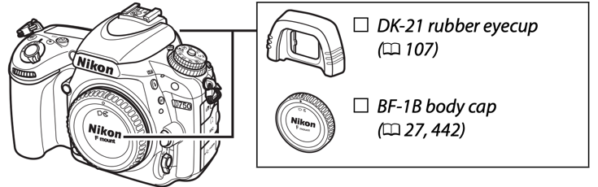
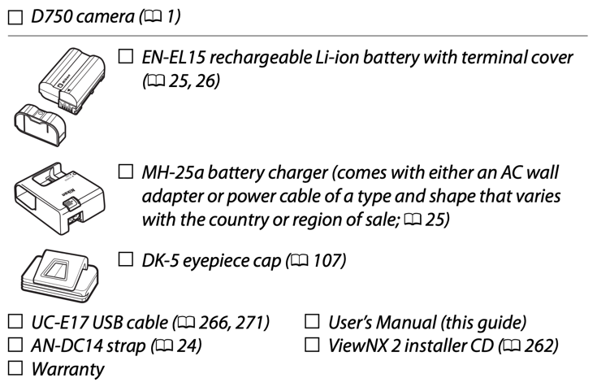
Introduction
Getting to Know the Camera
Take a few moments to familiarize yourself with camera controls and displays. You may find it helpful to bookmark this section and refer to it as you read through the rest of the manual.
The Camera Body
Top of the camera
| No. | Part | Page |
|---|---|---|
| 1 | Accessory shoe (for optional flash unit) | p. 433 |
| 2 | Release mode dial | p. 7, p. 103 |
| 3 | Release mode dial lock release | p. 7, p. 103 |
| 4 | Eyelet for camera strap | |
| 5 | Mode dial lock release | p. 6, p. 34 |
| 6 | Mode dial | p. 6, p. 34 |
| 7 | Metering / format button (Z/Q) | |
| 8 | Movie-record button | p. 68 |
| 9 | Sub-command dial | p. 363 |
| 10 | Power switch | p. 5, p. 28 |
| 11 | Shutter-release button | p. 36, p. 373 |
| 12 | Exposure compensation button (E) | |
| 13 | Focal plane mark | p. 133 |
| 14 | Main command dial | p. 363 |
| 15 | Control panel | p. 8 |
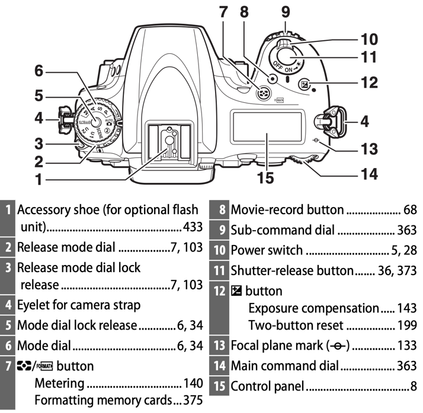
Front and left side of the camera
| No. | Part | Page |
|---|---|---|
| 1 | Built-in flash | p. 180 |
| 2 | Flash mode / flash compensation button (M/Y) | |
| 3 | Infrared receiver (front) | p. 194 |
| 4 | Cover for accessory terminal | p. 443 |
| 5 | Audio connector cover | p. 73, p. 443 |
| 6 | HDMI/USB connector cover | p. 266, p. 271, p. 277 |
| 7 | Lens release button | p. 33 |
| 8 | AF-mode button | p. 57, p. 59, p. 121, p. 125 |
| 9 | Focus-mode selector | p. 57, p. 120, p. 132 |
| 10 | Lens mounting mark | p. 27 |
| 11 | BKT button | |
| 12 | Mirror | p. 109, p. 451 |
| 13 | Meter coupling lever | p. 480 |
| 14 | Accessory terminal | p. 443 |
| 15 | Headphone connector | p. 73 |
| 16 | Connector for external microphone | p. 73, p. 443 |
| 17 | HDMI connector | p. 277 |
| 18 | USB connector |
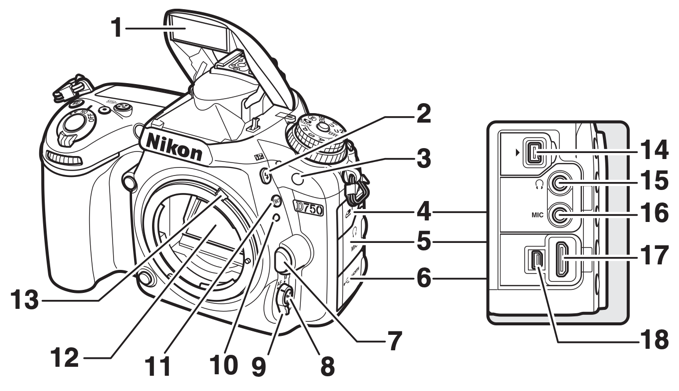
Lens mount and underside
| No. | Part | Page |
|---|---|---|
| 1 | Stereo microphone | p. 68, p. 71, p. 320 |
| 2 | CPU contacts | |
| 3 | Lens mount | p. 27, p. 133 |
| 4 | Contact cover for optional MB-D16 battery pack | p. 441 |
| 5 | Tripod socket | |
| 6 | AF coupling | |
| 7 | Fn button | p. 114, p. 356, p. 370 |
| 8 | Battery-chamber cover latch | p. 26 |
| 9 | Battery-chamber cover | p. 26 |
| 10 | Power connector cover | p. 445 |
| 11 | Memory card slot cover | p. 26 |
| 12 | Pv button | p. 70, p. 92, p. 361, p. 372 |
| 13 | AF-assist illuminator | p. 332 |
| 14 | Body cap | p. i, p. 442 |
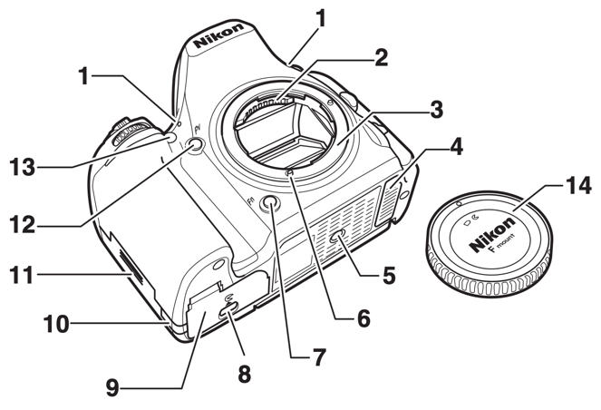
Rear of the camera
| No. | Part | Page |
|---|---|---|
| 1 | Viewfinder eyepiece | p. 10, p. 29 |
| 2 | Rubber eyecup | p. 107 |
| 3 | Diopter adjustment control | p. 29 |
| 4 | AE-L/AF-L button | |
| 5 | INFO (info) button | p. 12, p. 64, p. 75 |
| 6 | Multi selector | p. 19, p. 21 |
| 7 | OK button | p. 19, p. 21, p. 354 |
| 8 | Focus selector lock | p. 127 |
| 9 | Memory card access lamp | p. 36, p. 225 |
| 10 | Infrared receiver (rear) | p. 194 |
| 11 | Live view selector | |
| 12 | Lv button | p. 54, p. 66 |
| 13 | Speaker | p. 80 |
| 14 | Tilting monitor | p. 17 |
| 15 | i button | |
| 16 | Zoom out / thumbnails / ISO button (W/ISO) |
| No. | Part | Page |
|---|---|---|
| 17 | Zoom in / image quality button (X/QUAL) | |
| 18 | Help / protect / white balance button (L/WB) | |
| 19 | MENU button | |
| 20 | Playback button (K) | |
| 21 | Delete / format button (O/Q) |
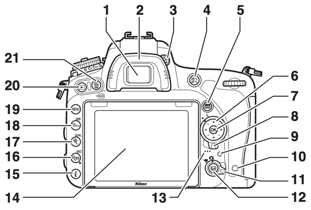
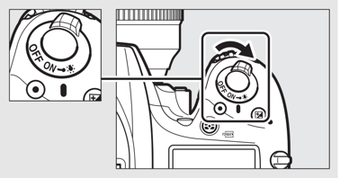
The Mode Dial
The camera offers the modes listed below. To choose a mode, press the mode dial lock release and rotate the mode dial.
| Mode | Description | Page |
|---|---|---|
| P | Programmed auto | p. 89 |
| S | Shutter-priority auto | p. 90 |
| A | Aperture-priority auto | p. 91 |
| M | Manual | p. 93 |
| AUTO | Auto | p. 34 |
| Auto (flash off) | Auto mode with flash disabled | p. 34 |
| SCENE | Scene modes | p. 41 |
| U1, U2 | User settings modes | p. 99 |
| EFFECTS | Special effects modes | p. 46 |
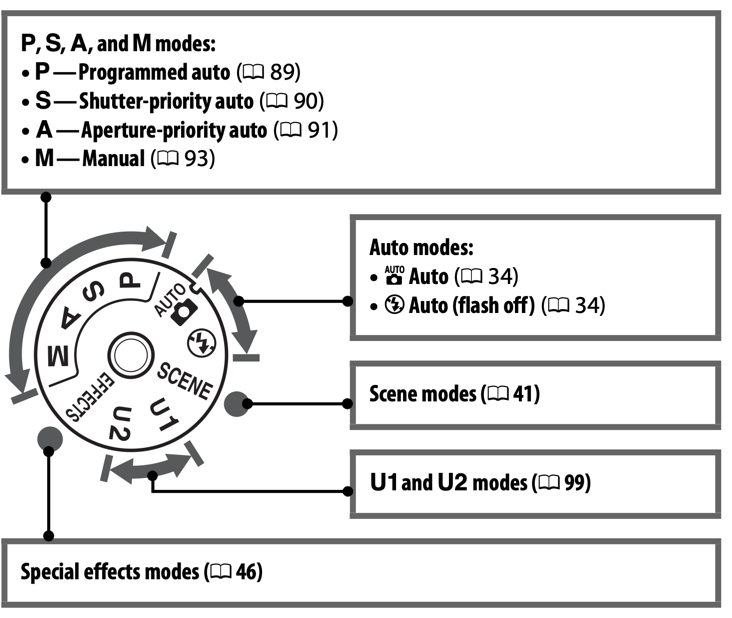
The Release-Mode Dial
To choose a release mode, press the release mode dial lock release and turn the release mode dial to the desired setting (p. 103).
| No. | Setting | Description | Page |
|---|---|---|---|
| 1 | S | Single frame | p. 103 |
| 2 | CL | Continuous low speed | p. 103 |
| 3 | CH | Continuous high speed | p. 103 |
| 4 | Q | Quiet shutter-release | p. 103 |
| 5 | QC | Qc (quiet continuous) shutter-release | p. 103 |
| 6 | Self-timer symbol | Self-timer | p. 103, p. 106 |
| 7 | MUP | Mirror up | p. 104, p. 109 |
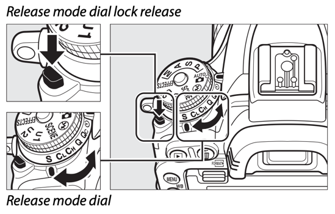
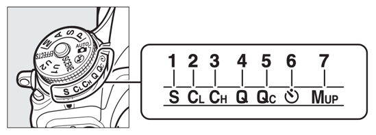
The Control Panel
| No. | Part | Page |
|---|---|---|
| 1 | Shutter speed
| p. 90, p. 93 |
| 2 | ISO sensitivity indicator
| p. 134 |
| 3 | Metering | p. 140 |
| 4 | ISO sensitivity
| p. 134 |
| 5 | Aperture stop indicator | p. 92, p. 431 |
| 6 | Aperture (f-number) | p. 91, p. 93 |
| 7 | Memory card indicator (Slot 1) | p. 31, p. 376 |
| 8 | Memory card indicator (Slot 2) | p. 31, p. 376 |
| 9 | Exposure compensation indicator | p. 144 |
| 10 | Flash compensation indicator | p. 189 |
| No. | Part | Page |
|---|---|---|
| 11 | Wi-Fi indicator | p. 288 |
| 12 | Flash sync indicator | p. 345 |
| 13 | Exposure/bracketing indicator | |
| 14 | Exposure/flash bracketing indicator | p. 203 |
| 15 | Battery indicator | p. 30 |
| 16 | Multiple exposure indicator | p. 217 |
| 17 | Color temperature indicator | p. 152 |
| 18 | Number of exposures remaining | p. 31 |
| 19 | “k” (appears when memory remains for over 1000 exposures) | p. 31 |
Note: Display shown with all indicators lit for illustrative purposes.
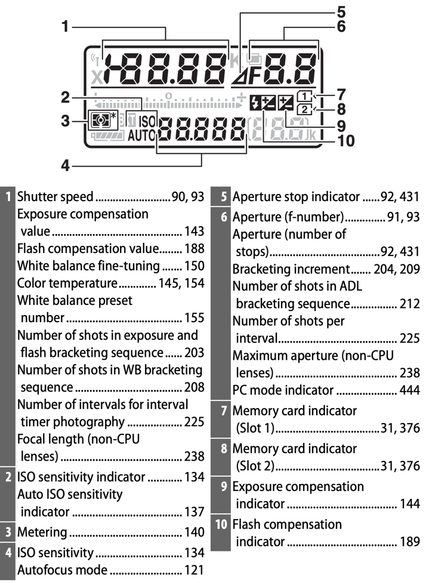
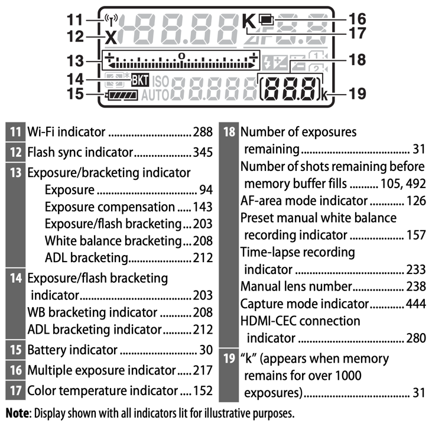
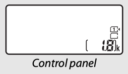
The Viewfinder
| No. | Part | Page |
|---|---|---|
| 1 | Special effects mode indicator | p. 46 |
| 2 | Monochrome indicator (displayed in % mode or when the Monochrome Picture Control or a Picture Control based on Monochrome is selected) | p. 47, p. 165 |
| 3 | AF area brackets | p. 29, p. 35, p. 247 |
| 4 | Low battery warning | p. 30 |
| 5 | “No memory card” indicator | p. 33 |
| 6 | Framing grid (displayed when On is selected for Custom Setting d7, Viewfinder grid display) | p. 341 |
| 7 | Focus points
| p. 36, p. 127, p. 329, p. 330 |
| 8 | + NEF (RAW) indicator | p. 357 |
| 9 | 1.2× DX crop | p. 111 |
| 10 | Roll indicator (portrait orientation) | p. 359 |
| 11 | Roll indicator (landscape orientation) | p. 359 |
| No. | Part | Page |
|---|---|---|
| 12 | Focus indicator | p. 36, p. 129, p. 133 |
| 13 | Metering | p. 139, p. 140 |
| 14 | Autoexposure (AE) lock | p. 141 |
| 15 | Flexible program indicator | p. 89 |
| 16 | Shutter speed | p. 90, p. 93 |
| 17 | Aperture (f-number)
| p. 91, p. 93 |
| 18 | HDR indicator | p. 178 |
| 19 | ADL indicator | p. 176 |
| 20 | Exposure/flash bracketing indicator | p. 203 |
| 21 | ISO sensitivity indicator | p. 134 |
| 22 | “k” (appears when memory remains for over 1000 exposures) | p. 31 |
| 23 | Flash-ready indicator | p. 40, p. 339 |
| 24 | FV lock indicator | p. 191 |
| 25 | Flash sync indicator | p. 345 |
| 26 | Aperture stop indicator | p. 92, p. 431 |
| 27 | Exposure indicator
| p. 94 |
| 28 | Flash compensation indicator | p. 188 |
| 29 | Exposure compensation indicator | p. 144 |
| 30 | Auto ISO sensitivity indicator | p. 137 |
| 31 | ISO sensitivity | p. 134 |
| 32 | Number of exposures remaining | p. 31 |
Note: Display shown with all indicators lit for illustrative purposes.
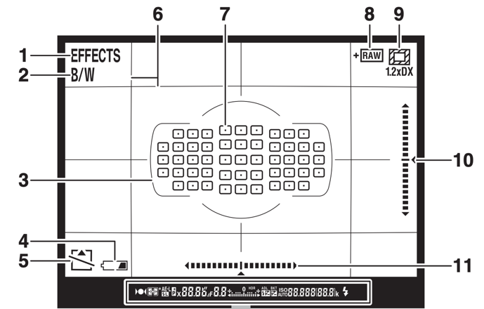
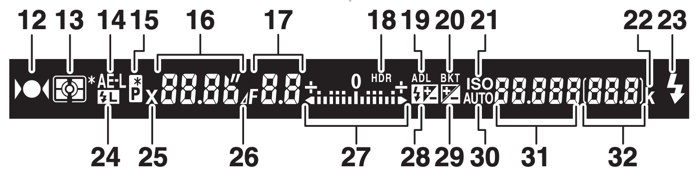
Diagram: PDF p. 39
The Information Display
Press the INFO button to display shutter speed, aperture, the number of exposures remaining, AF-area mode, and other shooting information in the monitor.
| No. | Part | Page |
|---|---|---|
| 1 | Shooting mode | p. 6, p. 34, p. 41, p. 46, p. 88 |
| 2 | Flexible program indicator | p. 89 |
| 3 | Flash sync indicator | p. 345 |
| 4 | Shutter speed | p. 90, p. 93 |
| 5 | Aperture stop indicator | p. 92, p. 431 |
| 6 | Aperture (f-number) | p. 91, p. 93 |
| No. | Part | Page |
|---|---|---|
| 7 | Exposure indicator | p. 94 |
| 8 | Picture Control indicator | p. 166 |
| 9 | White balance
| p. 146 |
| 10 | HDR indicator | p. 178 |
| 11 | “Beep” indicator | p. 338 |
| 12 | “k” (appears when memory remains for over 1000 exposures) | p. 31 |
| 13 | Image comment indicator | p. 384 |
| 14 | Copyright information | p. 385 |
| 15 | “Clock not set” indicator | p. 15, p. 381 |
| 16 | Image quality
| p. 116 |
| 17 | Image size | p. 118 |
| 18 | Autofocus mode | p. 121 |
| 19 | Pv button assignment | p. 361 |
| 20 | Active D-Lighting indicator | p. 176 |
| 21 | Release mode
| p. 7, p. 103 |
| 22 | Image area indicator | p. 112 |
| 23 | Metering | p. 139 |
| 24 | Exposure and flash bracketing indicator | p. 203 |
| 25 | ADL bracketing amount | p. 213 |
The Information Display (continued)
| No. | Part | Page |
|---|---|---|
| 26 | Wi-Fi connection indicator
| p. 288 |
| 27 | Satellite signal indicator | p. 240 |
| 28 | Long exposure noise reduction indicator | p. 317 |
| 29 | Vignette control indicator | p. 315 |
| 30 | Auto distortion control | p. 316 |
| 31 | Exposure delay mode | p. 339 |
| 32 | Interval timer indicator | p. 222 |
| 33 | MB-D16 battery type display
| p. 344 |
| 34 | Camera battery indicator | p. 30 |
| 35 | ISO sensitivity indicator | p. 134 |
| 36 | Number of exposures remaining
| p. 31 |
| 37 | Fn button assignment | p. 356 |
| 38 | AE-L/AF-L button assignment | p. 361 |
| 39 | AF-area mode indicator | p. 126 |
| 40 | Flash mode | p. 180, p. 182 |
| 41 | FV lock indicator | p. 191 |
| 42 | Flash compensation indicator
| p. 188 |
| 43 | Exposure compensation indicator
| p. 144 |
Note: Display shown with all indicators lit for illustrative purposes.
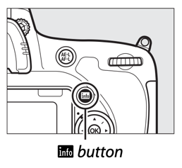
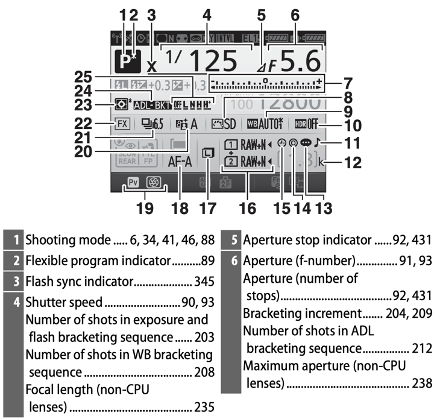
Diagram: PDF p. 41
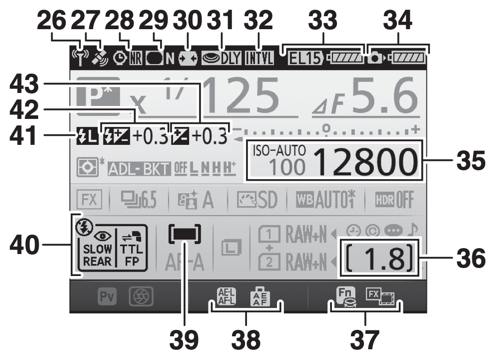
Using the Tilting Monitor
The monitor can be angled and rotated as shown below.
| Position | Use |
|---|---|
| Normal use | The monitor is normally used in storage position. |
| Low-angle shots (tilts approx. 90°) | Take shots with the camera held low. |
| High-angle shots (tilts approx. 75°) | Take shots with the camera held high. |
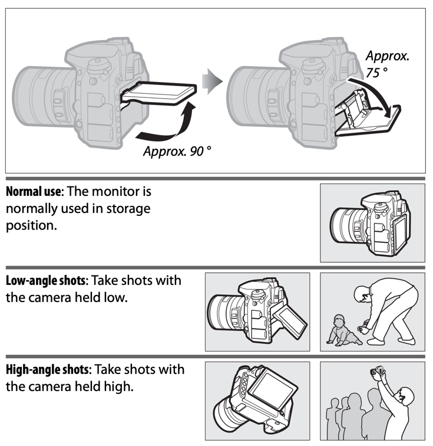
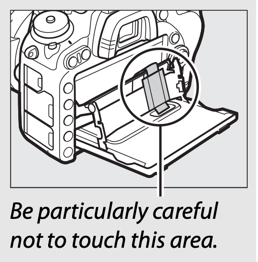
The Multi Selector
In this manual, operations using the multi selector are represented by ▲, ▼, ◀, and ▶ icons.
| Icon | Operation |
|---|---|
| ▲ | Press the multi selector up |
| ▼ | Press the multi selector down |
| ◀ | Press the multi selector left |
| ▶ | Press the multi selector right |
| OK | The OK button in the center of the multi selector |
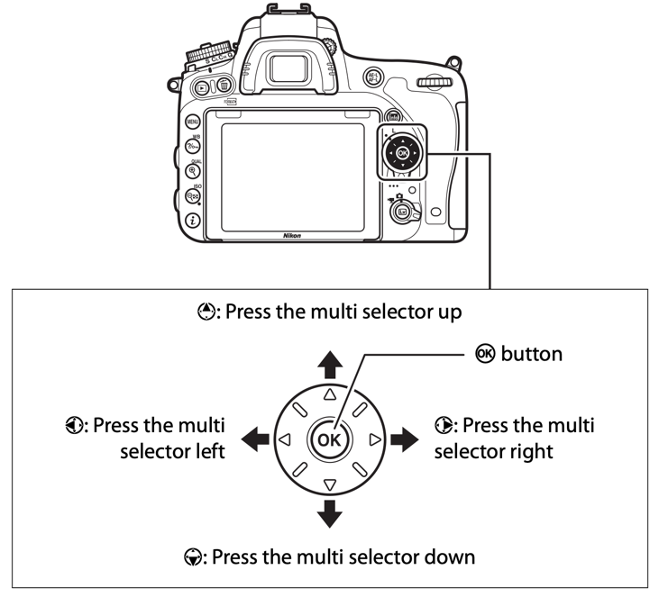
First Steps
Follow the seven steps below to ready the camera for use.
- Attach the strap. Attach the strap as shown. Repeat for the second eyelet.
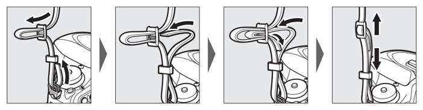
Attaching the strap - Charge the battery. Insert the battery and plug the charger in (depending on the country or region, the charger comes with either an AC wall adapter or a power cable). An exhausted battery will fully charge in about two hours and 35 minutes.
- AC wall adapter: Insert the AC wall adapter into the charger AC inlet (①). Slide the AC wall adapter latch as shown (②) and rotate the adapter 90° to fix it in place (③). Insert the battery and plug the charger in.
- Power cable: After connecting the power cable with the plug in the orientation shown, insert the battery and plug the cable in.
The CHARGE lamp will flash while the battery charges. When charging is complete, the lamp stops flashing and stays lit (battery charging / charging complete).
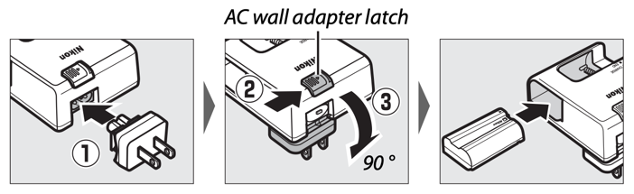
AC wall adapter 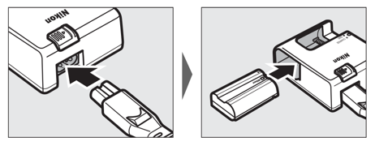
Power cable 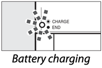
Battery charging 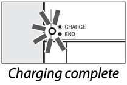
Charging complete - Insert the battery and memory card. Before inserting or removing the battery or memory cards, confirm that power switch is in the OFF position. Insert the battery in the orientation shown, using the battery to keep the orange battery latch pressed to one side. The latch locks the battery in place when the battery is fully inserted.
If you are using only one memory card, insert it into slot 1 (p. 31). Slide the memory card in until it clicks into place.
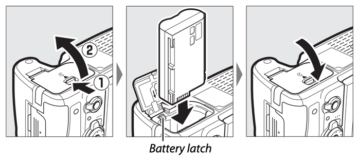
Inserting the battery 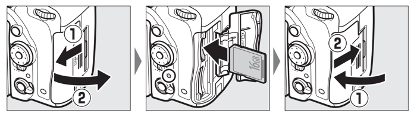
Inserting a memory card - Attach a lens. Be careful to prevent dust from entering the camera when the lens or body cap is removed. The lens generally used in this manual for illustrative purposes is an AF-S NIKKOR 24–85mm f/3.5–4.5G ED VR.
- Remove the camera body cap.
- Remove the rear lens cap.
- Align the mounting marks (camera mounting mark and lens mounting mark).
- Rotate the lens as shown until it clicks into place.
Be sure to remove the lens cap before taking pictures.
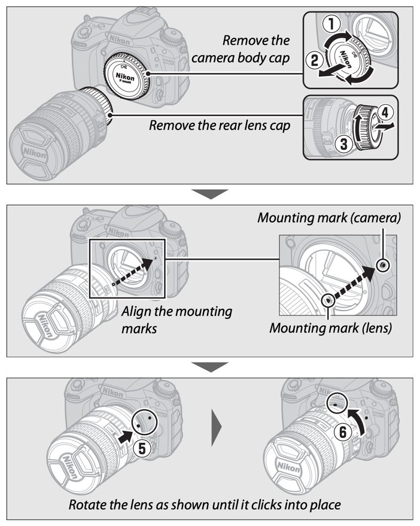
Attaching a lens - Turn the camera on. The control panel will light. If this is the first time the camera has been turned on, a language-selection dialog will be displayed.
- Choose a language and set the camera clock. Use the multi selector and OK button to select a language and set the camera clock (▲ moves the cursor up, ▼ moves it down, ▶ selects the highlighted item or displays a sub-menu, OK selects the highlighted item). When setting the camera clock, you will be prompted to choose a time zone, date format, and daylight saving time option before setting the time and date; note that the camera uses a 24-hour clock. Language and date/time settings can be changed at any time using the Language (p. 381) and Time zone and date (p. 381) options in the setup menu.
- Focus the viewfinder. Rotate the diopter adjustment control until the AF area brackets are in sharp focus. When operating the control with your eye to the viewfinder, be careful not to put your fingers or fingernails in your eye. (Compare “viewfinder not in focus” with “viewfinder in focus” in the diagram.)
The camera is now ready for use. Proceed to p. 34 for information on taking photographs.
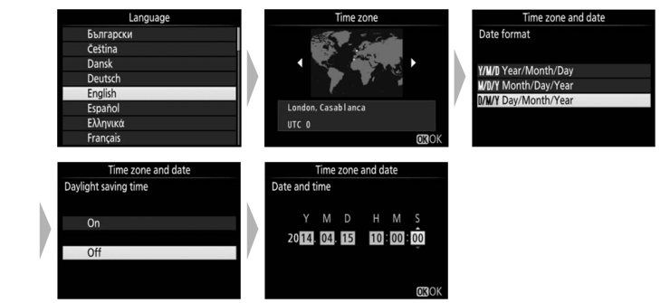
Language, time zone and date 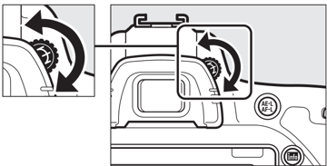
Diopter adjustment control 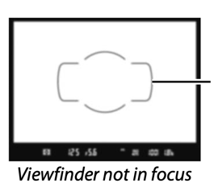
Viewfinder not in focus 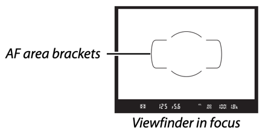
Viewfinder in focus
Battery Level
The battery level is shown in the control panel and viewfinder.
| Control panel | Viewfinder | Description |
|---|---|---|
| Battery icon, full | — | Battery fully charged. |
| Battery icon, three bars | — | Battery partially discharged. |
| Battery icon, two bars | — | |
| Battery icon, one bar | — | |
| Battery icon, nearly empty | Battery icon, nearly empty | Low battery. Charge battery or ready spare battery. |
| Empty battery icon (flashes) | Empty battery icon (flashes) | Shutter release disabled. Charge or exchange battery. |
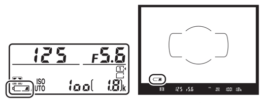
Number of Exposures Remaining
The camera has two memory card slots: slot 1 and slot 2. Slot 1 is for the main card; the card in slot 2 plays a backup or secondary role. If the default setting of Overflow is selected for Role played by card in Slot 2 (p. 119) when two memory cards are inserted, the card in slot 2 will only be used when the card in slot 1 is full.
The control panel shows the slot or slots that currently hold a memory card (the example in the diagram shows the icons displayed when a card is inserted in each slot). If the memory card is full or locked or an error has occurred, the icon for the affected card will flash (p. 473).
The control panel and viewfinder show the number of photographs that can be taken at current settings (values over 1000 are rounded down to the nearest hundred; e.g., values between 1800 and 1899 are shown as 1.8 k). If two memory cards are inserted, the displays show the space available on the card in Slot 1.
- Slot 1 and Slot 2 memory card indicators (control panel)
- Number of exposures remaining (control panel and viewfinder)
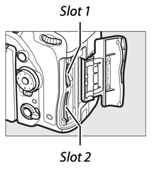
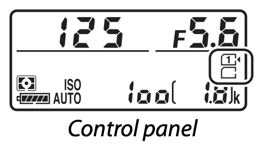
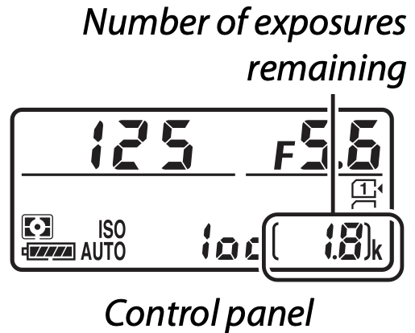
Removing the Battery and Memory Cards
Removing the Battery
Turn the camera off and open the battery-chamber cover. Press the battery latch in the direction shown by the arrow to release the battery and then remove the battery by hand.
Removing Memory Cards
After confirming that the memory card access lamp is off, turn the camera off, open the memory card slot cover, and press the card in and then release it (①). The card can then be removed by hand (②).
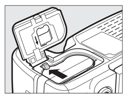
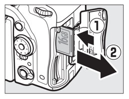
Detaching the Lens
Be sure the camera is off when removing or exchanging lenses. To remove the lens, press and hold the lens release button (①) while turning the lens clockwise (②). After removing the lens, replace the lens caps and camera body cap.
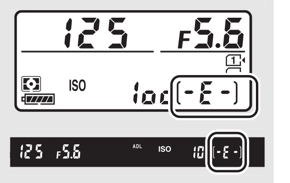
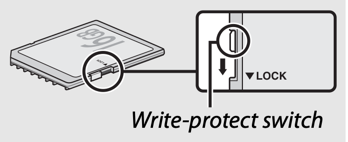
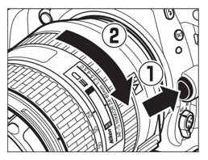
Basic Photography and Playback
“Point-and-Shoot” Photography (Auto and Auto (flash off) Modes)
This section describes how to take photographs in Auto and Auto (flash off) modes. These are automatic “point-and-shoot” modes in which the majority of settings are controlled by the camera in response to shooting conditions.
Before proceeding, turn the camera on and select the desired mode by pressing the mode dial lock release and rotating the mode dial to Auto or Auto (flash off). The only difference between these two modes is that the flash will not fire in Auto (flash off) mode.
- Mode dial
- Mode dial lock release
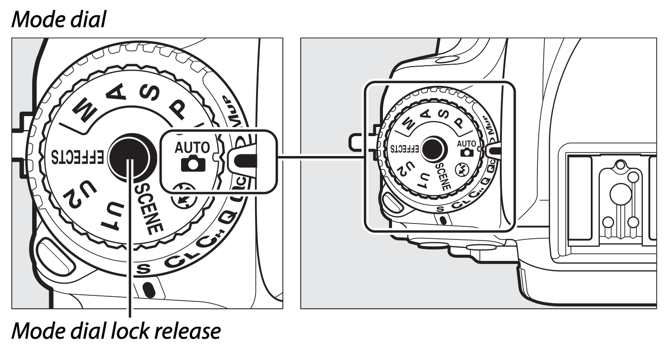
- Ready the camera. When framing photographs in the viewfinder, hold the handgrip in your right hand and cradle the camera body or lens with your left. When framing photographs in portrait (tall) orientation, hold the camera as shown in the diagram.
- Frame the photograph. Frame a photograph in the viewfinder with the main subject in the AF area brackets.
- Press the shutter-release button halfway. Press the shutter-release button halfway to focus (if the subject is poorly lit, the flash may pop up and the AF-assist illuminator may light). When the focus operation is complete, the active focus point and in-focus indicator (●) will appear in the viewfinder.
In-focus indicator Description ● Subject in focus. ◀ (focus point is between camera and subject) Focus point is between camera and subject. ▶ (focus point is behind subject) Focus point is behind subject. ◀ ▶ (flashes) Camera unable to focus using autofocus. See p. 131. Diagram labels: focus indicator, focus point, in-focus indicator.
- Shoot. Smoothly press the shutter-release button the rest of the way down to take the photograph. The memory card access lamp will light and the photograph will be displayed in the monitor for a few seconds. Do not eject the memory card or remove or disconnect the power source until the lamp has gone out and recording is complete.
Basic Playback
- Press the Playback button. A photograph will be displayed in the monitor. The memory card containing the picture currently displayed is shown by an icon.
- View additional pictures. Additional pictures can be displayed by pressing ◀ or ▶. To end playback and return to shooting mode, press the shutter-release button halfway.
Deleting Unwanted Photographs
To delete the photograph currently displayed in the monitor, press the Delete button. Note that photographs can not be recovered once deleted.
- Display the photograph. Display the photograph you wish to delete as described on the preceding page. The location of the current image is shown by an icon at the bottom left corner of the display.
- Delete the photograph. Press the Delete button. A confirmation dialog will be displayed; press the Delete button again to delete the image and return to playback. To exit without deleting the picture, press Playback.
Matching Settings to the Subject or Situation (Scene Mode)
The camera offers a choice of “scene” modes. Choosing a scene mode automatically optimizes settings to suit the selected scene, making creative photography as simple as selecting a mode, framing a picture, and shooting as described on pages 34–36.
The following scenes can be selected by rotating the mode dial to SCENE and rotating the main command dial until the desired scene appears in the monitor. To view the currently selected scene, press the info button.
| Scene | Scene |
|---|---|
| Portrait | Beach/snow |
| Landscape | Sunset |
| Child | Dusk/dawn |
| Sports | Pet portrait |
| Close up | Candlelight |
| Night portrait | Blossom |
| Night landscape | Autumn colors |
| Party/indoor | Food |
Portrait
Use for portraits with soft, natural-looking skin tones. If the subject is far from the background or a telephoto lens is used, background details will be softened to lend the composition a sense of depth.
Landscape
Use for vivid landscape shots in daylight.
Child
Use for snapshots of children. Clothing and background details are vividly rendered, while skin tones remain soft and natural.
Sports
Fast shutter speeds freeze motion for dynamic sports shots in which the main subject stands out clearly.
Close Up
Use for close-up shots of flowers, insects, and other small objects (a macro lens can be used to focus at very close ranges).
Night Portrait
Use for a natural balance between the main subject and the background in portraits taken under low light.
Night Landscape
Reduce noise and unnatural colors when photographing night landscapes, including street lighting and neon signs.
Party/Indoor
Capture the effects of indoor background lighting. Use for parties and other indoor scenes.
Beach/Snow
Capture the brightness of sunlit expanses of water, snow, or sand.
Sunset
Preserves the deep hues seen in sunsets and sunrises.
Dusk/Dawn
Preserves the colors seen in the weak natural light before dawn or after sunset.
Pet Portrait
Use for portraits of active pets.
Candlelight
For photographs taken by candlelight.
Blossom
Use for fields of flowers, orchards in bloom, and other landscapes featuring expanses of blossoms.
Autumn Colors
Captures the brilliant reds and yellows in autumn leaves.
Food
Use for vivid photographs of food.
Special Effects
Special effects can be used when taking photographs and shooting movies.
The following effects can be selected by rotating the mode dial to EFFECTS and rotating the main command dial until the desired scene appears in the monitor. To view the currently selected effect, press the info button.
| Effect | Effect |
|---|---|
| Night vision | Silhouette |
| Color sketch | High key |
| Miniature effect | Low key |
| Selective color |
Night Vision
Use under conditions of darkness to record monochrome images at high ISO sensitivities.
Color Sketch
The camera detects and colors outlines for a color sketch effect. The effect can be adjusted in live view (p. 50).
Miniature Effect
Create photos that appear to be pictures of dioramas. Works best when shooting from a high vantage point. Miniature effect movies play back at high speed, compressing about 45 minutes of footage shot at 1920 × 1080/30p into a movie that plays back in about three minutes. The effect can be adjusted in live view (p. 51).
Selective Color
All colors other than the selected colors are recorded in black and white. The effect can be adjusted in live view (p. 52).
Silhouette
Silhouette subjects against bright backgrounds.
High Key
Use when shooting bright scenes to create bright images that seem filled with light.
Low Key
Use when shooting dark scenes to create dark, low-key images with prominent highlights.
Options Available in Live View
Settings for the selected effect are adjusted in the live view display but apply during live view and viewfinder photography and movie recording.
Color Sketch
- Select live view. Press the LV button. The view through the lens will be displayed in the monitor.
- Adjust options. Press OK to display the options shown in the diagram. Press ▲ or ▼ to highlight Vividness or Outlines and press ◀ or ▶ to change. Vividness can be increased to make colors more saturated, or decreased for a washed-out, monochromatic effect, while outlines can be made thicker or thinner. Increasing the thickness of the lines also makes colors more saturated.
- Press OK. Press OK to exit when settings are complete. To resume viewfinder photography, press the LV button. The selected settings will continue in effect and will apply to photographs and movies recorded in live view or using the viewfinder.
Miniature Effect
- Select live view. Press the LV button. The view through the lens will be displayed in the monitor.
- Position the focus point. Use the multi selector to position the focus point in the area that will be in focus and then press the shutter-release button halfway to check focus. To temporarily clear miniature effect options from the display and enlarge the view in the monitor for precise focus, press Zoom in. Press Zoom out to restore the miniature effect display.
- Display options. Press OK to display miniature effect options.
- Adjust options. Press ◀ or ▶ to choose the orientation of the area that will be in focus and press ▲ or ▼ to adjust its width.
- Press OK. Press OK to exit when settings are complete. To resume viewfinder photography, press the LV button. The selected settings will continue in effect and will apply to photographs and movies recorded in live view or using the viewfinder.
Selective Color
- Select live view. Press the LV button. The view through the lens will be displayed in the monitor.
- Display options. Press OK to display selective color options (the display shows the selected color).
- Select a color. Frame an object in the white square in the center of the display and press ▲ to choose the color of the object as one that will remain in the final image (the camera may have difficulty detecting unsaturated colors; choose a saturated color). To zoom in on the center of the display for more precise color selection, press Zoom in. Press Zoom out to zoom out.
- Choose the color range. Press ▲ or ▼ to increase or decrease the range of similar hues that will be included in the final image. Choose from values between 1 and 7; note that higher values may include hues from other colors.
- Select additional colors. To select additional colors, rotate the main command dial to highlight another of the three color boxes at the top of the display and repeat Steps 3 and 4 to select another color. Repeat for a third color if desired. To deselect the highlighted color, press Delete. To remove all colors, press and hold Delete. A confirmation dialog will be displayed; select Yes.
- Press OK. Press OK to exit when settings are complete. During shooting, only objects of the selected hues will be recorded in color; all others will be recorded in black-and-white. To resume viewfinder photography, press the LV button. The selected settings will continue in effect and will apply to photographs and movies recorded in live view or using the viewfinder.
Live View Photography
Follow the steps below to take photographs in live view.
- Rotate the live view selector to C (live view photography).
- Press the LV button. The mirror will be raised and the view through the lens will be displayed in the camera monitor. The subject will no longer be visible in the viewfinder.
- Position the focus point. Position the focus point over your subject as described on page 57.
- Focus. Press the shutter-release button halfway to focus.
The focus point will flash green while the camera focuses. If the camera is able to focus, the focus point will be displayed in green; if the camera is unable to focus, the focus point will flash red (note that pictures can be taken even when the focus point flashes red; check focus in the monitor before shooting). Exposure can be locked by pressing the AE-L/AF-L button (p. 141); focus locks while the shutter-release button is pressed halfway.
If exposure preview is enabled, the effects of shutter speed, aperture, ISO sensitivity, and exposure compensation (p. 143) can be previewed in the monitor (note that although exposure can be adjusted by ±5 EV, only values between –3 and +3 EV will be reflected in the preview display). To enable exposure preview, press the i button and select On for Exposure preview (p. 62).
- Take the picture. Press the shutter-release button the rest of the way down to shoot. The monitor will turn off.
- Exit live view mode. Press the LV button to exit live view mode.
Focus
To focus using autofocus, rotate the focus-mode selector to AF and follow the steps below to choose autofocus and AF-area modes. For information on focusing manually, see page 60.
Choosing a Focus Mode
The following autofocus modes are available during live view photography and movie live view:
| Mode | Description |
|---|---|
| AF-S | Single-servo AF: For stationary subjects. Focus locks when shutter-release button is pressed halfway. |
| AF-F | Full-time servo AF: For moving subjects. Camera focuses continuously until shutter-release button is pressed. Focus locks when shutter-release button is pressed halfway. |
To choose an autofocus mode, press the AF-mode button and rotate the main command dial until the desired mode is displayed in the monitor.
Choosing an AF-Area Mode
The following AF-area modes can be selected during live view photography and movie live view:
| Mode | Description |
|---|---|
| Face-priority AF | Use for portraits. The camera automatically detects and focuses on portrait subjects; the selected subject is indicated by a double yellow border (if multiple faces are detected, the camera will focus on the closest subject; to choose a different subject, use the multi selector). If the camera can no longer detect the subject (because, for example, the subject has turned to face away from the camera), the border will no longer be displayed. |
| Wide-area AF | Use for hand-held shots of landscapes and other non-portrait subjects. Use the multi selector to move the focus point anywhere in the frame, or press OK to position the focus point in the center of the frame. |
| Normal-area AF | Use for pin-point focus on a selected spot in the frame. Use the multi selector to move the focus point anywhere in the frame, or press OK to position the focus point in the center of the frame. A tripod is recommended. |
| Subject-tracking AF | Use the multi selector to position the focus point over your subject and press OK to start tracking. The focus point will track the selected subject as it moves through the frame. To end tracking, press OK again. Note that the camera may be unable to track subjects if they move quickly, leave the frame or are obscured by other objects, change visibly in size, color, or brightness, or are too small, too large, too bright, too dark, or similar in color or brightness to the background. |
To choose an AF-area mode, press the AF-mode button and rotate the sub-command dial until the desired mode is displayed in the monitor.
Manual Focus
To focus in manual focus mode (p. 132), rotate the lens focus ring until the subject is in focus.
To magnify the view in the monitor for precise focus, press the Zoom in button.
The Live View Display: Live View Photography
| Label | Item | Description | Page |
|---|---|---|---|
| 1 | Time remaining | The amount of time remaining before live view ends automatically. Displayed if shooting will end in 30 s or less. | 65 |
| 2 | Autofocus mode | The current autofocus mode. | 57 |
| 3 | AF-area mode | The current AF-area mode. | 58 |
| 4 | Focus point | The current focus point. The display varies with the option selected for AF-area mode. | 54 |
| 5 | Exposure indicator | When On is selected for Exposure preview, the exposure indicator shows the difference between the metered exposure and the exposure that will be achieved at current settings. | 94 |
The Information Display: Live View Photography
To hide or display indicators in the monitor during live view photography, press the info button.
- Virtual horizon (p. 388)
- Information on / Information off
- Histogram (exposure preview only; p. 62)
- Framing guides
Movie Live View
Movies can be recorded in live view.
- Rotate the live view selector to 1 (movie live view).
- Press the LV button. The mirror will be raised and the view through the lens will be displayed in the camera monitor as it would appear in the actual movie, modified for the effects of exposure. The subject will no longer be visible in the viewfinder.
- Choose a focus mode (p. 57).
- Choose an AF-area mode (p. 58).
- Focus. Frame the opening shot and focus as described in Steps 3 and 4 on pages 54 and 55 (for more information on focusing in movie live view, see page 59). Note that the number of subjects that can be detected in face-priority AF drops during movie recording.
- Start recording. Press the movie-record button to start recording. A recording indicator and the time available are displayed in the monitor. Exposure can be locked by pressing the AE-L/AF-L button (p. 141) or altered by up to ±3 EV in steps of 1/3 EV using exposure compensation (p. 143). In autofocus mode, the camera can be refocused by pressing the shutter-release button halfway.
- End recording. Press the movie-record button again to end recording. Recording will end automatically when the maximum length is reached, or the memory card is full.
- Exit movie live view. Press the LV button to exit movie live view.
Indices
If Index marking is selected as the “press” option for Custom Setting g1 (Assign Fn button, p. 370), g2 (Assign preview button, p. 372), or g3 (Assign AE-L/AF-L button, p. 373), you can press the selected button during recording to add indices that can be used to locate frames during editing and playback (p. 80; note that indices can not be added in Miniature effect mode). Up to 20 indices can be added to each movie.
The Live View Display: Movie Live View
| Label | Item | Description | Page |
|---|---|---|---|
| 1 | “No movie” icon | Indicates that movies can not be recorded. | — |
| 2 | Headphone volume | Volume of audio output to headphones. Displayed when third-party headphones are connected. | 72 |
| 3 | Microphone sensitivity | Microphone sensitivity. | 71, 320 |
| 4 | Sound level | Sound level for audio recording. Displayed in red if level is too high; adjust microphone sensitivity accordingly. | 71 |
| 5 | Frequency response | The current frequency response. | 71, 320 |
| 6 | Wind noise reduction | Displayed when wind noise reduction is on. | 72, 321 |
| 7 | Time remaining (movie live view) | The recording time available for movies. | 68 |
| 8 | Movie frame size | The frame size for movie recording. | 71, 319 |
| 9 | Highlight display indicator | Appears when highlight display is enabled. | 72 |
The Information Display: Movie Live View
To hide or display indicators in the monitor during movie live view, press the info button.
- Virtual horizon (p. 388)
- Information on / Information off
- Histogram
- Framing guides
Image Area
Movies and photographs recorded in movie live view (p. 66) have an aspect ratio of 16 : 9.
- FX-format crop (p. 111)
- DX-format crop (p. 111)
- DX-based movie format crop
- FX-based movie format crop
- DX-based movie format icon
Images recorded with On selected for Image area > Auto DX crop in the movie shooting menu (p. 318) and a DX lens attached use a DX-based movie format, as do images recorded with DX (24×16) selected for Image area > Choose image area. Other images use an FX-based movie format. An icon is displayed when the DX-based movie format is selected. The approximate size of the area at the center of the image sensor used to record photographs taken in movie live view is 35.9 × 20.2 mm when the FX-based movie format is selected and 23.5 × 13.2 mm when the DX-based movie format is selected.
Taking Photos During Movie Live View
If Take photos is selected for Custom Setting g4 (Assign shutter button, p. 373), photographs can be taken at any time during movie live view by pressing the shutter-release button all the way down. If movie recording is in progress, recording will end and the footage recorded to that point will be saved. The photograph will be recorded at the current image area setting using a crop with an aspect ratio of 16 : 9. Image quality is determined by the option selected for Image quality in the photo shooting menu (p. 115). Note that the exposure for photographs can not be previewed during movie live view. For accurate results when shooting in mode M, adjust exposure in live view photography (p. 93), then start movie live view and check the image area before beginning recording.
Viewing Movies
Movies are indicated by a movie icon in full-frame playback (p. 241). Press OK to start playback; your current position is indicated by the movie progress bar.
The following operations can be performed:
| To | Use | Description |
|---|---|---|
| Pause | ▼ | Pause playback. |
| Play | OK | Resume playback when movie is paused or during rewind/advance. |
| Rewind/advance | ◀ / ▶ | Speed increases with each press, from 2× to 4× to 8× to 16×; keep pressed to skip to beginning or end of movie (first frame is indicated by a first-frame icon in top right corner of monitor, last frame by a last-frame icon). If playback is paused, movie rewinds or advances one frame at a time; keep pressed for continuous rewind or advance. |
| Skip 10 s | Main command dial | Rotate the main command dial one stop to skip ahead or back 10 s. |
| Skip ahead/back | Sub-command dial | Rotate the sub-command dial to skip to next or previous index, or to skip to the last or first frame if the movie contains no indices. |
| Adjust volume | Zoom in / Zoom out | Press Zoom in to increase volume, Zoom out to decrease. |
| Trim movie | i | See page 81 for more information. |
| Exit | ▲ / Playback | Exit to full-frame playback. |
| Return to shooting mode | Shutter-release button | Press the shutter-release button halfway to exit to shooting mode. |
Editing Movies
Trim footage to create edited copies of movies or save selected frames as JPEG stills.
| Option | Description |
|---|---|
| Choose start/end point | Create a copy from which the opening or closing footage has been removed. |
| Save selected frame | Save a selected frame as a JPEG still. |
Trimming Movies
To create trimmed copies of movies:
- Display a movie full frame (p. 241).
- Pause the movie on the new opening or closing frame. Play the movie back as described on page 79, pressing OK to start and resume playback and ▼ to pause and pressing ◀ or ▶ or rotating the main or sub-command dial to locate the desired frame. Your approximate position in the movie can be ascertained from the movie progress bar. Pause playback when you reach the new opening or closing frame.
- Select Choose start/end point. Press the i button, then highlight Choose start/end point and press OK.
- Choose the current frame as the new start or end point. To create a copy that begins from the current frame, highlight Start point and press OK. The frames before the current frame will be removed when you save the copy. To create a copy that ends at the current frame, highlight End point and press OK. The frames after the current frame will be removed when you save the copy.
- Confirm the new start or end point. If the desired frame is not currently displayed, press ◀ or ▶ to advance or rewind (to skip to 10 s ahead or back, rotate the main command dial one stop; to skip to an index, or to the first or last frame if the movie contains no indices, rotate the sub-command dial).
- Create the copy. Once the desired frame is displayed, press ▲.
- Preview the movie. To preview the copy, highlight Preview and press OK (to interrupt the preview and return to the save options menu, press ▲). To abandon the current copy and return to Step 5, highlight Cancel and press OK; to save the copy, proceed to Step 8.
- Save the copy. Highlight Save as new file and press OK to save the copy to a new file. To replace the original movie file with the edited copy, highlight Overwrite existing file and press OK.
Saving Selected Frames
To save a copy of a selected frame as a JPEG still:
- Pause the movie on the desired frame. Play the movie back as described on page 79, pressing OK to start and resume playback and ▼ to pause. Pause the movie at the frame you intend to copy.
- Choose Save selected frame. Press the i button, then highlight Save selected frame and press OK.
- Create a still copy. Press ▲ to create a still copy of the current frame.
- Save the copy. Highlight Yes and press OK to create a fine-quality (p. 115) JPEG copy of the selected frame.
P, S, A, and M Modes
P, S, A, and M modes offer different degrees of control over shutter speed and aperture.
| Mode | Description |
|---|---|
| P | Programmed auto (p. 89): Camera sets shutter speed and aperture for optimal exposure. Recommended for snapshots and in other situations in which there is little time to adjust camera settings. |
| S | Shutter-priority auto (p. 90): User chooses shutter speed; camera selects aperture for best results. Use to freeze or blur motion. |
| A | Aperture-priority auto (p. 91): User chooses aperture; camera selects shutter speed for best results. Use to blur background or bring both foreground and background into focus. |
| M | Manual (p. 93): User controls both shutter speed and aperture. Set shutter speed to Bulb or Time for long time-exposures. |
P: Programmed Auto
In this mode, the camera automatically adjusts shutter speed and aperture according to a built-in program to ensure optimal exposure in most situations.
S: Shutter-Priority Auto
In shutter-priority auto, you choose the shutter speed while the camera automatically selects the aperture that will produce the optimal exposure.
To choose a shutter speed, rotate the main command dial while the exposure meters are on. Shutter speed can be set to “x200” or to values between 30 s and 1/4000 s.
A: Aperture-Priority Auto
In aperture-priority auto, you choose the aperture while the camera automatically selects the shutter speed that will produce the optimal exposure.
To choose an aperture between the minimum and maximum values for the lens, rotate the sub-command dial while the exposure meters are on.
M: Manual
In manual exposure mode, you control both shutter speed and aperture. While the exposure meters are on, rotate the main command dial to choose a shutter speed, and the sub-command dial to set aperture. Shutter speed can be set to “x200” or to values between 30 s and 1/4000 s, or the shutter can be held open indefinitely for a long time-exposure (Bulb or Time, p. 95). Aperture can be set to values between the minimum and maximum values for the lens. Use the exposure indicators to check exposure.
- Sub-command dial: aperture
- Main command dial: shutter speed
Long Time-Exposures (M Mode Only)
Select the following shutter speeds for long time-exposures of moving lights, the stars, night scenery, or fireworks.
- Bulb: The shutter remains open while the shutter-release button is held down. To prevent blur, use a tripod or an optional wireless remote controller (pp. 197, 444) or remote cord (p. 443). (Example: length of exposure 35 s, aperture f/25.)
- Time: Start the exposure using the shutter-release button on the camera or on an optional remote control, remote cord, or wireless remote controller. The shutter remains open for thirty minutes or until the button is pressed a second time.
Before proceeding, mount the camera on a tripod or place it on a stable, level surface. To prevent light entering via the viewfinder from appearing in the photograph or interfering with exposure, remove the rubber eyecup and cover the viewfinder with the supplied eyepiece cap (p. 107). Nikon recommends using a fully charged battery or an optional AC adapter and power connector to prevent loss of power while the shutter is open. Note that noise (bright spots, randomly-spaced bright pixels, or fog) may be present in long exposures; before shooting, choose On for Long exposure NR in the photo shooting menu (p. 317).
Bulb
- Rotate the mode dial to M.
- Choose a shutter speed. While the exposure meters are on, rotate the main command dial to choose a shutter speed of “Bulb”.
- Take the photograph. After focusing, press the shutter-release button on the camera, optional wireless remote controller or remote cord all the way down. Remove your finger from the shutter-release button when the exposure is complete.
Time
- Rotate the mode dial to M.
- Choose a shutter speed. While the exposure meters are on, rotate the main command dial left to choose a shutter speed of “Time”.
- Open the shutter. After focusing, press the shutter-release button on the camera or optional remote control, remote cord, or wireless remote controller all the way down.
- Close the shutter. Repeat the operation performed in Step 3 (shooting ends automatically if the button is not pressed after 30 minutes).
User Settings: U1 and U2 Modes
Assign frequently-used settings to the U1 and U2 positions on the mode dial.
Saving User Settings
- Select a mode. Rotate the mode dial to the desired mode.
- Adjust settings. Make the desired adjustments to flexible program (mode P), shutter speed (modes S and M), aperture (modes A and M), exposure and flash compensation, flash mode, focus point, metering, autofocus and AF-area modes, bracketing, and settings in the shooting (pp. 310, 318) and Custom Settings (p. 323) menus.
- Select Save user settings. Press the MENU button to display the menus. Highlight Save user settings in the setup menu and press ▶.
- Select Save to U1 or Save to U2. Highlight Save to U1 or Save to U2 and press ▶.
- Save user settings. Highlight Save settings and press OK to assign the settings selected in Steps 1 and 2 to the mode dial position selected in Step 4.
Recalling User Settings
Simply rotate the mode dial to U1 to recall the settings assigned to Save to U1, or to U2 to recall the settings assigned to Save to U2.
Resetting User Settings
To reset settings for U1 or U2 to default values:
- Select Reset user settings. Press the MENU button to display the menus. Highlight Reset user settings in the setup menu and press ▶.
- Select Reset U1 or Reset U2. Highlight Reset U1 or Reset U2 and press ▶.
- Reset user settings. Highlight Reset and press OK.
Release Mode
Choosing a Release Mode
To choose a release mode, press the release mode dial lock release and turn the release mode dial to the desired setting.
| Mode | Description |
|---|---|
| S | Single frame: Camera takes one photograph each time shutter-release button is pressed. |
| CL | Continuous low speed: While shutter-release button is held down, camera records 1–6 frames per second.* Frame rate can be chosen using Custom Setting d2 (Continuous low-speed, p. 338). Note that only one picture will be taken if the flash fires. |
| CH | Continuous high speed: While shutter-release button is held down, camera records up to 6.5 frames per second.* Use for active subjects. Note that only one picture will be taken if the flash fires. |
| Q | Quiet shutter-release: As for single frame, except that mirror does not click back into place while shutter-release button is fully pressed, allowing user to control timing of click made by mirror, which is also quieter than in single frame mode. In addition, beep does not sound regardless of setting selected for Custom Setting d1 (Beep; p. 338). |
| Qc | Qc (quiet continuous) shutter-release: While shutter-release button is held down, camera records up to 3 frames per second.* Camera noise is reduced. Note that only one picture will be taken if the flash fires. |
| Self-timer | Self-timer: Take pictures with the self-timer (p. 106). |
| Mup | Mirror up: Choose this mode to minimize camera shake in telephoto or close-up photography or in other situations in which the slightest camera movement can result in blurred photographs (p. 109). |
* Average frame rate with an EN-EL15 battery, continuous-servo AF, manual or shutter-priority auto exposure, a shutter speed of 1/200 s or faster, remaining settings (or in the case of CL, remaining settings other than Custom Setting d2) at default values, and memory remaining in memory buffer. The stated rates may not be available under some conditions. Frame rates may drop at extremely small apertures (high f-numbers) or slow shutter speeds, when vibration reduction (available with VR lenses) or auto ISO sensitivity control (p. 136) is on, or when the battery is low, a non-CPU lens is attached, or Aperture ring is selected for Custom Setting f5 (Customize command dials) > Aperture setting (p. 364).
Self-Timer Mode
The self-timer can be used to reduce camera shake or for self-portraits.
- Mount the camera on a tripod. Mount the camera on a tripod or place the camera on a stable, level surface.
- Select self-timer mode. Press the release mode dial lock release and turn the release mode dial to the self-timer position.
- Frame the photograph and focus. In single-servo AF (p. 121), photographs can only be taken if the in-focus indicator (●) appears in the viewfinder.
- Start the timer. Press the shutter-release button all the way down to start the timer. The self-timer lamp will start to flash. Two seconds before the photograph is taken, the self-timer lamp will stop flashing. The shutter will be released about ten seconds after the timer starts. To turn the self-timer off before a photograph is taken, turn the release mode dial to another setting.
Mirror up Mode
Choose this mode to minimize blurring caused by camera movement when the mirror is raised. To use mirror-up mode, press the release mode dial lock release and rotate the release mode dial to the mirror up (Mup) position.
After pressing the shutter-release button halfway to set focus and exposure, press the shutter-release button the rest of the way down to raise the mirror and then press the shutter-release button all the way down again to take the picture. The mirror lowers when shooting ends.
Image Recording Options
Image Area
Choose from image areas of FX (36 × 24) 1.0× (FX format), DX (24 × 16) 1.5× (DX format), and 1.2× (30 × 20) 1.2×. See p. 492 for information on the number of pictures that can be stored at different image area settings.
The diagram shows the relative size of the crops: the FX format (36×24) image circle, the DX format (24×16) image circle, the DX format area and the 1.2× area.
Image Area Options
The camera offers a choice of the following image areas:
| Option | Description |
|---|---|
| FX (36×24) 1.0× (FX format) | Images are recorded in FX format using the full area of the image sensor (35.9 × 24.0 mm), producing an angle of view equivalent to a NIKKOR lens on a 35mm format camera. |
| 1.2× (30×20) 1.2× | A 29.9 × 19.9 mm area at the center of the image sensor is used to record photographs. To calculate the approximate focal length of the lens in 35mm format, multiply by 1.2. This option is not available in movie shooting menu. |
| DX (24×16) 1.5× (DX format) | An area at the center of the image sensor 23.5 × 15.7 mm is used to record pictures in DX format. To calculate the approximate focal length of the lens in 35mm format, multiply by 1.5. |
Automatic Crop Selection
To automatically select a DX crop when a DX lens is attached, select On for in the shooting menus (pp. 310, 318). The image area selected in the shooting menus or with the camera controls will be used only when a non-DX lens is attached. Select Off to use the currently-selected image area with all lenses.
The Image Area Menu
The image area can be selected using the option in the shooting menus or by pressing a control and rotating a command dial.
- Select Image area. Highlight Image area in either of the shooting menus and press ▶.
- Select Choose image area. Highlight Choose image area and press ▶.
- Adjust settings. Choose an option and press OK. The selected crop is displayed in the viewfinder (p. 112).
Camera Controls
- Assign image area selection to a camera control. Select Choose image area as the “press + command dials” option for a camera control in the Custom Settings menu (p. 323). Image area selection can be assigned to the Fn button (Custom Setting f2, Assign Fn button, p. 356), the Pv button (Custom Setting f3, Assign preview button, p. 361), or the AE-L/AF-L button (Custom Setting f4, Assign AE-L/AF-L button, p. 361).
- Use the selected control to choose an image area. The image area can be selected by pressing the selected button and rotating the main or sub-command dial until the desired crop is displayed in the viewfinder (p. 112). The option currently selected for image area can be viewed by pressing the button to display the image area in the control panel, viewfinder, or information display. FX format is displayed as “36 – 24”, 1.2× as “30 – 20”, and DX format as “24 – 16”.
Image Quality and Size
Together, image quality and size determine how much space each photograph occupies on the memory card. Larger, higher quality images can be printed at larger sizes but also require more memory, meaning that fewer such images can be stored on the memory card (p. 492).
Image Quality
Choose a file format and compression ratio (image quality).
| Option | File type | Description |
|---|---|---|
| NEF (RAW) | NEF | Raw data from the image sensor are saved without additional processing. Settings such as white balance and contrast can be adjusted after shooting. |
| JPEG fine | JPEG | Record JPEG images at a compression ratio of roughly 1:4 (fine quality).* |
| JPEG normal | Record JPEG images at a compression ratio of roughly 1:8 (normal quality).* | |
| JPEG basic | Record JPEG images at a compression ratio of roughly 1:16 (basic quality).* | |
| NEF (RAW)+JPEG fine | NEF/JPEG | Two images are recorded, one NEF (RAW) image and one fine-quality JPEG image. |
| NEF (RAW)+JPEG normal | Two images are recorded, one NEF (RAW) image and one normal-quality JPEG image. | |
| NEF (RAW)+JPEG basic | Two images are recorded, one NEF (RAW) image and one basic-quality JPEG image. |
* Size priority selected for JPEG compression. The compression ratio is an approximation only; the actual ratio varies with ISO sensitivity and the scene recorded.
Image quality can be set by pressing the QUAL button and rotating the main command dial until the desired setting is displayed in the information display.
JPEG Compression
To choose the type of compression for JPEG images, highlight JPEG compression in the photo shooting menu and press ▶.
| Option | Description |
|---|---|
| Size priority | Images are compressed to produce relatively uniform file size. |
| Optimal quality | Optimal image quality. File size varies with scene recorded. |
Type
To choose the type of compression for NEF (RAW) images, highlight in the photo shooting menu and press ▶.
| Option | Description |
|---|---|
| Lossless compressed | NEF images are compressed using a reversible algorithm, reducing file size by about 20–40% with no effect on image quality. |
| Compressed | NEF images are compressed using a non-reversible algorithm, reducing file size by about 35–55% with almost no effect on image quality. |
NEF (RAW) Bit Depth
To choose a bit depth for NEF (RAW) images, highlight in the photo shooting menu and press ▶.
| Option | Description |
|---|---|
| 12-bit | NEF (RAW) images are recorded at a bit-depth of 12 bits. |
| 14-bit | NEF (RAW) images are recorded at a bit depth of 14 bits, producing files larger than those with a bit depth of 12 bits but increasing the color data recorded. |
Image Size
Image size is measured in pixels. Choose from Large, Medium, or Small (note that image size varies depending on the option selected for Image area, p. 110):
| Image area | Option | Size (pixels) | Print size (cm/in.)* |
|---|---|---|---|
| FX (36×24) (FX format) | Large | 6016 × 4016 | 50.9 × 34.0 / 20.1 × 13.4 |
| Medium | 4512 × 3008 | 38.2 × 25.5 / 15.0 × 10.0 | |
| Small | 3008 × 2008 | 25.5 × 17.0 / 10.0 × 6.7 | |
| 1.2× (30×20) | Large | 5008 × 3336 | 42.4 × 28.2 / 16.7 × 11.1 |
| Medium | 3752 × 2504 | 31.8 × 21.2 / 12.5 × 8.3 | |
| Small | 2504 × 1664 | 21.2 × 14.1 / 8.3 × 5.5 | |
| DX (24×16) (DX format) | Large | 3936 × 2624 | 33.3 × 22.2 / 13.1 × 8.7 |
| Medium | 2944 × 1968 | 24.9 × 16.7 / 9.8 × 6.6 | |
| Small | 1968 × 1312 | 16.7 × 11.1 / 6.6 × 4.4 |
* Approximate size when printed at 300 dpi. Print size in inches equals image size in pixels divided by printer resolution in dots per inch (dpi; 1 inch = approximately 2.54 cm).
Image size can be set by pressing the QUAL button and rotating the sub-command dial until the desired setting is displayed in the information display.
Using Two Memory Cards
When two memory cards are inserted in the camera, you can use the Role played by card in Slot 2 item in the photo shooting menu to choose the role played by the card in Slot 2. Choose from Overflow (the card in Slot 2 is used only when the card in Slot 1 is full), Backup (each picture is recorded twice, once to the card in Slot 1 and again to the card in Slot 2), and RAW Slot 1—JPEG Slot 2 (as for Backup, except that the NEF/RAW copies of photos recorded at settings of NEF/RAW + JPEG are recorded only to the card in Slot 1 and the JPEG copies only to the card in Slot 2).
Focus
This section describes the focus options available when photographs are framed in the viewfinder. Focus can be adjusted automatically (see below) or manually (p. 132). The user can also select the focus point for automatic or manual focus (p. 127) or use focus lock to focus to recompose photographs after focusing (p. 129).
Autofocus
To use autofocus, rotate the focus-mode selector to AF.
Autofocus Mode
The following autofocus modes can be selected during viewfinder photography:
| Mode | Description |
|---|---|
| AF-A | Auto-servo AF: Camera automatically selects single-servo autofocus if subject is stationary, continuous-servo autofocus if subject is moving. |
| AF-S | Single-servo AF: For stationary subjects. Focus locks when shutter-release button is pressed halfway. At default settings, shutter can only be released when in-focus indicator (●) is displayed (focus priority; p. 327). |
| AF-C | Continuous-servo AF: For moving subjects. Camera focuses continuously while shutter-release button is pressed halfway; if subject moves, camera will engage predictive focus tracking (p. 122) to predict final distance to subject and adjust focus as necessary. At default settings, shutter can be released whether or not subject is in focus (release priority; p. 326). |
Autofocus mode can be selected by pressing the AF-mode button and rotating the main command dial until the desired setting is displayed in the viewfinder or control panel.
AF-Area Mode
Choose how the focus point is selected during viewfinder photography.
- Single-point AF: Select the focus point as described on p. 127; the camera will focus on the subject in the selected focus point only. Use with stationary subjects.
- Dynamic-area AF: Select the focus point as described on p. 127. In AF-A and AF-C focus modes, the camera will focus based on information from surrounding focus points if the subject briefly leaves the selected point. The number of focus points varies with the mode selected:
- 9-point dynamic-area AF: Choose when there is time to compose the photograph or when photographing subjects that are moving predictably (e.g., runners or race cars on a track).
- 21-point dynamic-area AF: Choose when photographing subjects that are moving unpredictably (e.g., players at a football game).
- 51-point dynamic-area AF: Choose when photographing subjects that are moving quickly and can not be easily framed in the viewfinder (e.g., birds).
- 3D-tracking: Select the focus point as described on p. 127. In AF-A and AF-C focus modes, the camera will track subjects that leave the selected focus point and select new focus points as required. Use to quickly compose pictures with subjects that are moving erratically from side to side (e.g., tennis players). If the subject leaves viewfinder, remove your finger from the shutter-release button and recompose the photograph with the subject in the selected focus point.
- Group-area AF: The camera focuses using a group of focus points selected by the user, reducing the risk of the camera focusing on the background instead of on the main subject. Choose for subjects that are difficult to photograph using a single focus point. If faces are detected in AF-S focus mode, the camera will give priority to portrait subjects.
- Auto-area AF: The camera automatically detects the subject and selects the focus point; if a face is detected, the camera will give priority to the portrait subject. The active focus points are highlighted briefly after the camera focuses; in AF-C mode or when continuous-servo autofocus is selected in AF-A mode, the main focus point remains highlighted after the other focus points have turned off.
AF-area mode can be selected by pressing the AF-mode button and rotating the sub-command dial until the desired setting is displayed in the viewfinder or control panel.
Focus Point Selection
The camera offers a choice of 51 focus points that can be used to compose photographs with the main subject positioned almost anywhere in the frame. Follow the steps below to choose the focus point (in group-area AF, you can follow these steps to choose a group of focus points).
- Rotate the focus selector lock to ●. This allows the multi selector to be used to select the focus point.
- Select the focus point. Use the multi selector to select the focus point in the viewfinder while the exposure meters are on. Press OK to select the center focus point.
The focus selector lock can be rotated to the locked (L) position following selection to prevent the selected focus point from changing when the multi selector is pressed.
Focus Lock
Focus lock can be used to change the composition after focusing, making it possible to focus on a subject that will not be in a focus point in the final composition. If the camera is unable to focus using autofocus (p. 131), focus lock can also be used to recompose the photograph after focusing on another object at the same distance as your original subject. Focus lock is most effective when an option other than auto-area AF is selected for AF-area mode (p. 123).
- Focus. Position the subject in the selected focus point and press the shutter-release button halfway to initiate focus. Check that the in-focus indicator (●) appears in the viewfinder.
- Lock focus. AF-A and AF-C focus modes: With the shutter-release button pressed halfway (step 1 in the diagram), press the AE-L/AF-L button (step 2) to lock both focus and exposure (an AE-L icon will be displayed in the viewfinder). Focus will remain locked while the AE-L/AF-L button is pressed, even if you later remove your finger from the shutter-release button.
AF-S focus mode: Focus locks automatically when the in-focus indicator (●) appears, and remain locked until you remove your finger from the shutter-release button. Focus can also be locked by pressing the AE-L/AF-L button (see above). - Recompose the photograph and shoot. Focus will remain locked between shots if you keep the shutter-release button pressed halfway (AF-S) or keep the AE-L/AF-L button pressed, allowing several photographs in succession to be taken at the same focus setting.
Do not change the distance between the camera and the subject while focus lock is in effect. If the subject moves, focus again at the new distance.
Manual Focus
Manual focus is available for lenses that do not support autofocus (non-AF NIKKOR lenses) or when the autofocus does not produce the desired results (p. 131).
- AF lenses: Set the lens focus mode switch (if present) and camera focus-mode selector to M.
- Manual focus lenses: Focus manually.
To focus manually, adjust the lens focus ring until the image displayed on the clear matte field in the viewfinder is in focus. Photographs can be taken at any time, even when the image is not in focus.
The Electronic Rangefinder
The viewfinder focus indicator can be used to confirm whether the subject in the selected focus point is in focus (the focus point can be selected from any of the 51 focus points). After positioning the subject in the selected focus point, press the shutter-release button halfway and rotate the lens focus ring until the in-focus indicator (●) is displayed. Note that with the subjects listed on p. 131, the in-focus indicator may sometimes be displayed when the subject is not in focus; confirm focus in the viewfinder before shooting.
For information on using the electronic rangefinder with optional AF-S/AF-I teleconverters, see p. 430.
ISO Sensitivity
The camera’s sensitivity to light can be adjusted according to the amount of light available. Choose from settings that range from ISO 100 to ISO 12800 in steps equivalent to ⅓ EV. Settings of from about 0.3 to 1 EV below ISO 100 and 0.3 to 2 EV above ISO 12800 are also available for special situations. Auto, scene, and special effect modes also offer an AUTO option, which allows the camera to set ISO sensitivity automatically in response to lighting conditions. The higher the ISO sensitivity, the less light needed to make an exposure, allowing higher shutter speeds or smaller apertures.
| Modes | Options |
|---|---|
| P, S, A, M | Lo 1–Lo 0.3; 100–12800 in steps of ⅓ EV; Hi 0.3–Hi 2 |
| One special effects mode | Auto |
| Other shooting modes | Auto; Lo 1–Lo 0.3; 100–12800 in steps of ⅓ EV; Hi 0.3–Hi 2 |
ISO sensitivity can be adjusted by pressing the ISO button and rotating the main command dial until the desired setting is displayed in the control panel, viewfinder or information display.
Auto ISO Sensitivity Control
(P, S, A, and M Modes Only)
If On is selected for in the photo shooting menu, ISO sensitivity will automatically be adjusted if optimal exposure can not be achieved at the value selected by the user (ISO sensitivity is adjusted appropriately when the flash is used).
- Select Auto ISO sensitivity control. Select ISO sensitivity settings in the photo shooting menu, highlight Auto ISO sensitivity control and press ▶.
- Select On. Highlight On and press OK (if Off is selected, ISO sensitivity will remain fixed at the value selected by the user).
- Adjust settings. The maximum value for auto ISO sensitivity can be selected using Maximum sensitivity (note that if the ISO sensitivity selected by the user is higher than that chosen for Maximum sensitivity, the value selected by the user will be used instead). In modes P and A, sensitivity will only be adjusted if underexposure would result at the shutter speed selected for Minimum shutter speed (1/2000–30 s, or Auto; in modes S and M, ISO sensitivity will be adjusted for optimal exposure at the shutter speed selected by the user). If Auto is selected, the camera will choose the minimum shutter speed based on the focal length of the lens. Press OK to exit when settings are complete.
When On is selected, the viewfinder and control panel show ISO AUTO. When sensitivity is altered from the value selected by the user, these indicators flash and the altered value is shown in viewfinder.
Exposure
Metering
(P, S, A, and M Modes Only)
Choose how the camera sets exposure in P, S, A, and M modes (in other modes, the camera selects the metering method automatically).
| Option | Description |
|---|---|
| Matrix metering | Matrix: Produces natural results in most situations. Camera meters a wide area of the frame and set exposure according to tone distribution, color, composition, and, with type G, E, or D lenses (p. 429), distance information (3D color matrix metering III; with other CPU lenses, camera uses color matrix metering III, which does not include 3D distance information). |
| Center-weighted metering | Center-weighted: Camera meters entire frame but assigns greatest weight to center area (if CPU lens is attached, size of area can be selected using Custom Setting b5, Center-weighted area, p. 335; if non-CPU lens is attached, area is equivalent to circle 12 mm in diameter). Classic meter for portraits; recommended when using filters with an exposure factor (filter factor) over 1×. |
| Spot metering | Spot: Camera meters circle 4 mm (0.16 in.) in diameter (approximately 1.5% of frame). Circle is centered on current focus point, making it possible to meter off-center subjects (if non-CPU lens is used or if auto-area AF is in effect, camera will meter center focus point). Ensures that subject will be correctly exposed, even when background is much brighter or darker. |
| Highlight-weighted metering | Highlight-weighted: Camera assigns greatest weight to highlights. Use to reduce loss of detail in highlights, for example when photographing spotlit performers on a stage. |
To choose a metering option, press the metering button and rotate the main command dial until the desired setting is displayed in the viewfinder and control panel.
Autoexposure Lock
Use autoexposure lock to recompose photographs after using center-weighted metering and spot metering (p. 139) to meter exposure.
- Lock exposure. Position the subject in the selected focus point and press the shutter-release button halfway. With the shutter-release button pressed halfway and the subject positioned in the focus point, press the AE-L/AF-L button to lock focus and exposure (if you are using autofocus, confirm that the in-focus indicator (●) appears in the viewfinder). While exposure lock is in effect, an AE-L indicator will appear in the viewfinder.
- Recompose the photograph. Keeping the AE-L/AF-L button pressed, recompose the photograph and shoot.
Exposure Compensation
(P, S, A, M, and two special effects modes only)
Exposure compensation is used to alter exposure from the value suggested by the camera, making pictures brighter or darker. It is most effective when used with center-weighted or spot metering (p. 139). Choose from values between –5 EV (underexposure) and +5 EV (overexposure) in increments of ⅓ EV. In general, positive values make the subject brighter while negative values make it darker.
The example images show –1 EV, no exposure compensation (±0 EV) and +1 EV.
To choose a value for exposure compensation, press the ± (exposure compensation) button and rotate the main command dial until the desired value is displayed in the control panel or viewfinder. Example displays: ±0 EV (button pressed), –0.3 (–⅓) EV, and +2.0 EV.
At values other than ±0.0, the 0 at the center of the exposure indicators will flash (modes P, S, A, and two special effects modes) and an exposure compensation icon will be displayed in the control panel and viewfinder after you release the ± button. The current value for exposure compensation can be confirmed in the exposure indicator by pressing the ± button.
Normal exposure can be restored by setting exposure compensation to ±0 (adjustments to exposure compensation in the two special effects modes will be reset when another mode is selected). Exposure compensation is not reset when the camera is turned off.
White Balance
(P, S, A, and M Modes Only)
White balance ensures that colors are unaffected by the color of the light source. In modes other than P, S, A, and M, white balance is set automatically by the camera. Auto white balance is recommended for most light sources in P, S, A, and M modes, but other values can be selected if necessary according to the type of source:
| Option | Color temp.* |
|---|---|
| Auto (Normal) | 3500–8000 K |
| Auto (Keep warm lighting colors) | |
| Incandescent | 3000 K |
| Fluorescent: Sodium-vapor lamps | 2700 K |
| Fluorescent: Warm-white fluorescent | 3000 K |
| Fluorescent: White fluorescent | 3700 K |
| Fluorescent: Cool-white fluorescent | 4200 K |
| Fluorescent: Day white fluorescent | 5000 K |
| Fluorescent: Daylight fluorescent | 6500 K |
| Fluorescent: High temp. mercury-vapor | 7200 K |
| Direct sunlight | 5200 K |
| Flash | 5400 K |
| Cloudy | 6000 K |
| Shade | 8000 K |
| Choose color temp. (p. 152) | 2500–10,000 K |
| Preset manual (p. 155) | — |
* All values are approximate and do not reflect fine-tuning (if applicable).
White balance is set by pressing the WB button and rotating the main command dial until the desired setting is displayed in the information display.
Fine-Tuning White Balance
At settings other than Choose color temp., white balance can be “fine-tuned” to compensate for variations in the color of the light source or to introduce a deliberate color cast into an image.
The White Balance Menu
To fine-tune white balance from the shooting menus, select White balance and follow the steps below.
- Display fine-tuning options. Highlight a white balance option and press ▶ (if a sub-menu is displayed, select the desired option and press ▶ again to display fine-tuning options; for information on fine-tuning preset manual white balance, see p. 164).
- Fine tune white balance. Use the multi selector to fine-tune white balance. White balance can be fine-tuned on the amber (A)–blue (B) axis in steps of 0.5 and the green (G)–magenta (M) axis in steps of 0.25. The horizontal (amber-blue) axis corresponds to color temperature, while the vertical (green-magenta) axis has the similar effects to the corresponding color compensation (CC) filters. The horizontal axis is ruled in increments equivalent to about 5 mired, the vertical axis in increments of about 0.05 diffuse density units.
- Press OK. Press OK to save settings and return to the shooting menus.
The WB Button
At settings other than Choose color temp. and Preset manual, the WB button can be used to fine-tune white balance on the amber (A)–blue (B) axis (p. 149; to fine-tune white balance when Preset manual is selected, use the shooting menus as described on p. 164). Press the WB button and rotate the sub-command dial to fine-tune white balance in steps of 0.5 (with each full increment equivalent to about 5 mired) until the desired value is displayed in the control panel and information display. Rotating the sub-command dial to the left increases the amount of amber (A). Rotating the sub-command dial to the right increases the amount of blue (B).
Choosing a Color Temperature
Follow the steps below to choose a color temperature when Choose color temp. is selected for white balance.
The White Balance Menu
Color temperature can be selected using the White balance options in the shooting menus. Enter values for the amber–blue and green–magenta axes (p. 149) as described below.
- Select Choose color temp. Select White balance in either of the shooting menus, then highlight Choose color temp. and press ▶.
- Select a value for amber-blue. Press ◀ or ▶ to highlight digits and press ▲ or ▼ to change.
- Select a value for green-magenta. Press ◀ or ▶ to highlight the G (green) or M (magenta) axis and press ▲ or ▼ to select a value.
- Press OK. Press OK to save changes and return to the shooting menus. If a value other than 0 is selected for the green (G)–magenta (M) axis, an asterisk (“*”) will be displayed in the information display.
The WB Button
When Choose color temp. is selected, the WB button can be used to select the color temperature, although only for the amber (A)–blue (B) axis. Press the WB button and rotate the sub-command dial until the desired value is displayed in the control panel and information display (adjustments are made in mireds; p. 151). To enter a color temperature directly, press the WB button and press ◀ or ▶ to highlight a digit and press ▲ or ▼ to change.
Preset Manual
Preset manual is used to record and recall custom white balance settings for shooting under mixed lighting or to compensate for light sources with a strong color cast. The camera can store up to six values for preset manual white balance in presets d-1 through d-6. Two methods are available for setting preset manual white balance:
| Method | Description |
|---|---|
| Direct measurement | Neutral gray or white object is placed under lighting that will be used in final photo and white balance measured by camera (p. 155). In live view photography and movie live view (pp. 54, 66), white balance can be measured in a selected area of the frame (spot white balance, p. 159). |
| Copy from existing photograph | White balance is copied from photo on memory card (p. 162). |
Viewfinder Photography
- Light a reference object. Place a neutral gray or white object under the lighting that will be used in the final photograph. In studio settings, a standard gray panel can be used as a reference object. Note that exposure is automatically increased by 1 EV when measuring white balance; in mode M, adjust exposure so that the exposure indicator shows ±0 (p. 94).
- Set white balance to Preset manual. Press the WB button and rotate the main command dial until Preset manual is displayed in the information display.
- Select a preset. Press the WB button and rotate the sub-command dial until the desired white balance preset (d-1 to d-6) is displayed in the information display.
- Select direct measurement mode. Release the WB button briefly and then press the button until the PRE indicator starts to flash in the control panel and viewfinder. The displays will flash for about six seconds.
- Measure white balance. Before the indicators stop flashing, frame the reference object so that it fills the viewfinder and press the shutter-release button all the way down. The camera will measure a value for white balance and store it in the preset selected in Step 3. No photograph will be recorded; white balance can be measured accurately even when the camera is not in focus.
- Check the results. If the camera was able to measure a value for white balance, a “good” indicator will flash in the control panel for about six seconds, while the viewfinder will show a flashing Gd. If lighting is too dark or too bright, the camera may be unable to measure white balance. A flashing no Gd indicator will appear in the control panel and viewfinder for about six seconds. Press the shutter-release button halfway to return to Step 5 and measure white balance again.
Live View (Spot White Balance)
In live view photography and movie live view (pp. 54, 66), white balance can be measured in a selected area of the frame, eliminating the need to prepare a reference object or change lenses during telephoto photography.
- Press the Lv button. The mirror will be raised and the view through the lens will be displayed in the camera monitor.
- Set white balance to Preset manual. Press the WB button and rotate the main command dial until Preset manual is displayed in the monitor.
- Select a preset. Press the WB button and rotate the sub-command dial until the desired white balance preset (d-1 to d-6) is displayed in the monitor.
- Select direct measurement mode. Release the WB button briefly and then press the button until the Preset manual icon in the monitor starts to flash. A spot white balance target will be displayed at the selected focus point.
- Position the target over a white or grey area. While the icon flashes in the display, use the multi selector to position the target over a white or grey area of the subject. To zoom the area around the target in for more precise positioning, press the QUAL (zoom in) button.
- Measure white balance. Press OK or press the shutter-release button all the way down to measure white balance. The time available to measure white balance is that selected for Custom Setting c4 (Monitor off delay) › Live view (p. 337). If the camera is unable to measure white balance, an error message will be displayed. Choose a new white balance target and repeat the process from Step 5.
- Exit direct measurement mode. Press the WB button to exit direct measurement mode.
When Preset manual is selected for White balance in either of the shooting menus, the position of the target used to measure preset manual white balance will be displayed on presets recorded during live view photography and movie live view.
Managing Presets
Copying White Balance from a Photograph
Follow the steps below to copy a value for white balance from an existing photograph to a selected preset.
- Select Preset manual. Select White balance in either of the shooting menus, then highlight Preset manual and press ▶.
- Select a destination. Highlight the destination preset (d-1 to d-6) and press the ISO button.
- Choose Select image. Highlight Select image and press ▶.
- Highlight a source image. Highlight the source image.
- Copy white balance. Press OK to copy the white balance value for the highlighted photograph to the selected preset. If the highlighted photograph has a comment (p. 384), the comment will be copied to the comment for the selected preset.
Image Enhancement
Picture Controls
(P, S, A, and M Modes Only)
In P, S, A, and M modes, your choice of Picture Control determines how pictures are processed (in other modes, the camera selects a Picture Control automatically).
Selecting a Picture Control
Choose a Picture Control according to the subject or type of scene.
| Option | Description |
|---|---|
| Standard | Standard processing for balanced results. Recommended for most situations. |
| Neutral | Minimal processing for natural results. Choose for photographs that will later be processed or retouched. |
| Vivid | Pictures are enhanced for a vivid, photoprint effect. Choose for photographs that emphasize primary colors. |
| Monochrome | Take monochrome photographs. |
| Portrait | Process portraits for skin with natural texture and a rounded feel. |
| Landscape | Produces vibrant landscapes and cityscapes. |
| Flat | Details are preserved over a wide tone range, from highlights to shadows. Choose for photographs that will later be extensively processed or retouched. |
- Select Set Picture Control. Highlight Set Picture Control in either of the shooting menus and press ▶.
- Select a Picture Control. Highlight a Picture Control and press OK.
Modifying Picture Controls
Existing preset or custom Picture Controls (p. 170) can be modified to suit the scene or the user’s creative intent. Choose a balanced combination of settings using Quick adjust, or make manual adjustments to individual settings.
- Select a Picture Control. Highlight the desired Picture Control in the Picture Control list (p. 165) and press ▶.
- Adjust settings. Press ▲ or ▼ to highlight the desired setting and press ◀ or ▶ to choose a value in increments of 1, or rotate the sub-command dial to choose a value in increments of 0.25 (p. 168). Repeat this step until all settings have been adjusted, or select a preset combination of settings by using the multi selector to choose Quick adjust. Default settings can be restored by pressing the Delete button.
- Press OK.
Picture Control Settings
| Group | Option | Description |
|---|---|---|
| Quick adjust | Mute or heighten the effect of the selected Picture Control (note that this resets all manual adjustments). Not available with Neutral, Monochrome, Flat, or custom Picture Controls (p. 170). | |
| Manual adjustments (all Picture Controls) | Sharpening | Control the sharpness of outlines. Select A to adjust sharpening automatically according to the type of scene. |
| Clarity | Adjust clarity manually or select A to let the camera adjust clarity automatically. Depending on the scene, shadows may appear around bright objects or halos may appear around dark objects at some settings. Clarity is not applied to movies. | |
| Contrast | Adjust contrast manually or select A to let the camera adjust contrast automatically. | |
| Brightness | Raise or lower brightness without loss of detail in highlights or shadows. | |
| Manual adjustments (non-monochrome only) | Saturation | Control the vividness of colors. Select A to adjust saturation automatically according to the type of scene. |
| Hue | Adjust hue. | |
| Manual adjustments (monochrome only) | Filter effects | Simulate the effect of color filters on monochrome photographs (p. 169). |
| Toning | Choose the tint used in monochrome photographs (p. 170). |
Creating Custom Picture Controls
The Picture Controls supplied with the camera can be modified and saved as custom Picture Controls.
- Select Manage Picture Control. Highlight Manage Picture Control in either of the shooting menus and press ▶.
- Select Save/edit. Highlight Save/edit and press ▶.
- Select a Picture Control. Highlight an existing Picture Control and press ▶, or press OK to proceed to Step 5 to save a copy of the highlighted Picture Control without further modification.
- Edit the selected Picture Control. See p. 168 for more information. To abandon any changes and start over from default settings, press the Delete button. Press OK when settings are complete.
- Select a destination. Choose a destination for the custom Picture Control (C-1 through C-9) and press ▶.
- Name the Picture Control. The text-entry dialog (with a keyboard area and a name area) will be displayed. By default, new Picture Controls are named by adding a two-digit number (assigned automatically) to the name of the existing Picture Control; to use the default name, proceed to Step 7. To move the cursor in the name area, hold the ISO button and press ◀ or ▶. To enter a new letter at the current cursor position, use the multi selector to highlight the desired character in the keyboard area and press OK. To delete the character at the current cursor position, press the Delete button. Custom Picture Control names can be up to nineteen characters long. Any characters after the nineteenth will be deleted.
- Press QUAL. Press the QUAL button to save changes and exit. The new Picture Control will appear in the Picture Control list.
Sharing Custom Picture Controls
Use the Load/save option in the Manage Picture Control menu to copy custom Picture Controls to and from memory cards. Custom Picture Controls can be created on a computer using Picture Control Utility 2, a utility launched from ViewNX 2 (supplied) or Capture NX-D (p. 268), then saved to a memory card and copied to the camera. Custom Picture Controls created on the camera can be copied to a memory card for use in other D750s. Once the copies are no longer needed, they can be deleted using the Delete from card option.
To copy custom Picture Controls to or from the memory card, or to delete custom Picture Controls from the memory card, highlight Load/save in the Manage Picture Control menu and press ▶. The following options will be displayed:
- Copy to camera: Copy custom Picture Controls from the memory card to custom Picture Controls C-1 through C-9 on the camera and name them as desired.
- Delete from card: Delete selected custom Picture Controls from the memory card. A confirmation dialog will be displayed before a Picture Control is deleted; to delete the selected Picture Control, highlight Yes and press OK.
- Copy to card: Copy a custom Picture Control (C-1 through C-9) from the camera to a selected destination (1 through 99) on the memory card.
Preserving Detail in Highlights and Shadows
Active D-Lighting
(P, S, A, and M Modes Only)
Active D-Lighting preserves details in highlights and shadows, creating photographs with natural contrast. Use for high contrast scenes, for example when photographing brightly lit outdoor scenery through a door or window or taking pictures of shaded subjects on a sunny day. It is most effective when used with matrix metering (p. 139).
The example images compare Active D-Lighting off with Active D-Lighting: Auto.
To use Active D-Lighting:
- Select Active D-Lighting. Highlight Active D-Lighting in the photo shooting menu and press ▶.
- Choose an option. Highlight the desired option and press OK. If Auto is selected, the camera will automatically adjust Active D-Lighting according to shooting conditions (in mode M, however, Auto is equivalent to Normal).
High Dynamic Range (HDR)
Used with high-contrast subjects, High Dynamic Range (HDR) preserves details in highlights and shadows by combining two shots taken at different exposures. HDR is most effective when used with matrix metering (p. 139; with spot or center-weighted metering and a non-CPU lens, a strength of Auto is equivalent to Normal). It can not be used to record NEF (RAW) images. Flash lighting, bracketing (p. 202), multiple exposure (p. 216), and time-lapse photography (p. 229) can not be used while HDR is in effect and shutter speeds of Bulb and Time are not available.
The first exposure (darker) and second exposure (brighter) are combined into the HDR image.
- Select HDR (high dynamic range). Highlight HDR (high dynamic range) in the photo shooting menu and press ▶.
- Select a mode. Highlight HDR mode and press ▶. Highlight one of the following and press OK:
- To take a series of HDR photographs, select On (series). HDR shooting will continue until you select Off for HDR mode.
- To take one HDR photograph, select On (single photo). Normal shooting will resume automatically after you have created a single HDR photograph.
- To exit without creating additional HDR photographs, select Off.
- Choose the HDR strength. To choose the difference in exposure between the two shots (HDR strength), highlight HDR strength and press ▶. Highlight the desired option and press OK. If Auto is selected, the camera will automatically adjust HDR strength to suit the scene.
- Frame a photograph, focus, and shoot. The camera takes two exposures when the shutter-release button is pressed all the way down. An HDR indicator will flash in the control panel and in the viewfinder while the images are combined; no photographs can be taken until recording is complete. Regardless of the option currently selected for release mode, only one photograph will be taken each time the shutter-release button is pressed. If On (series) is selected, HDR will only turn off when Off is selected for HDR mode; if On (single photo) is selected, HDR turns off automatically after the photograph is taken. The HDR icon clears from the display when HDR shooting ends.
Flash Photography
Using the Built-in Flash
The built-in flash can be used not only when natural lighting is inadequate but to fill in shadows and backlit subjects or to add a catch light to the subject’s eyes.
Auto Pop-up Modes
In Auto mode and the scene modes for which the flash pops up automatically (the mode-dial icons are listed on PDF p. 208), the built-in flash automatically pops up and fires as required.
- Choose a flash mode. Keeping the Flash (flash mode) button pressed, rotate the main command dial until the desired flash mode appears in the information display.
- Take pictures. The flash will pop up as required when the shutter-release button is pressed halfway and fire when a photograph is taken. If the flash does not pop up automatically, DO NOT attempt to raise it by hand. Failure to observe this precaution could damage the flash.
Flash Modes
The following flash modes are available:
- Auto flash: When lighting is poor or the subject is backlit, the flash pops up automatically when the shutter-release button is pressed halfway and fires as required. Not available in Night portrait mode.
- Auto with red-eye reduction: Use for portraits. The flash pops up and fires as required, but before it fires the red-eye reduction lamp lights to help reduce “red-eye.” Not available in Night portrait mode.
- Auto slow sync with red-eye reduction: As for auto with red-eye reduction, except that slow shutter speeds are used to capture background lighting. Use for portraits taken at night or under low light. Available in Night portrait mode.
- Auto slow sync: Slow shutter speeds are used to capture background lighting in shots taken at night or under low light. Available in Night portrait mode.
- Off: The flash does not fire.
Manual Pop-up Modes
In P, S, A, M, and Food modes, the flash must be raised manually. The flash will not fire if it is not raised.
- Raise the flash. Press the Flash (flash mode) button to raise the flash. Note that if the flash is off or an optional external flash unit is attached, the built-in flash will not pop up; proceed to Step 2.
- Choose a flash mode (P, S, A, and M modes only). Keeping the Flash button pressed, rotate the main command dial until the desired flash mode appears in the information display.
- Take pictures. If an option other than Off is selected, the flash will fire whenever a picture is taken.
Flash Modes
The following flash modes are available:
- Fill flash: The flash fires with every shot.
- Red-eye reduction: Use for portraits. The flash fires with every shot, but before it fires, the red-eye reduction lamp lights to help reduce “red-eye.” Not available in Food mode.
- Red-eye reduction with slow sync: As for “red-eye reduction”, above, except that shutter speed slows automatically to capture background lighting at night or under low light. Use when you want to include background lighting in portraits. Not available in modes S, M, and Food.
- Slow sync: As for “fill flash”, above, except that shutter speed slows automatically to capture background lighting at night or under low light. Use when you want to capture both subject and background. Not available in modes S, M, and Food.
- Slow rear-curtain sync: As for “rear-curtain sync”, below, except that shutter speed slows automatically to capture background lighting at night or under low light. Use when you want to capture both subject and background. Not available in modes S, M, and Food. A slow rear-curtain sync indicator is displayed when setting is complete.
- Rear-curtain sync: The flash fires just before the shutter closes, creating a stream of light behind moving light sources as shown in the right-hand example. Not available in modes P, A, and Food.
- Off: The flash does not fire. Not available in Food mode.
The example images compare front-curtain sync and rear-curtain sync.
Flash Compensation
(P, S, A, M, and two special effects modes only)
Flash compensation is used to alter flash output by from –3 EV to +1 EV in increments of ⅓ EV, changing the brightness of the main subject relative to the background. Flash output can be increased to make the main subject appear brighter, or reduced to prevent unwanted highlights or reflections.
Press the Flash (flash mode) button and rotate the sub-command dial until the desired value is displayed in the control panel, viewfinder, or information display. In general, choose positive values to make the main subject brighter, negative values to make it darker.
Example values: ±0 EV (Flash button pressed), –0.3 (–⅓) EV and +1.0 EV.
At values other than ±0.0, a flash compensation icon will be displayed in the control panel and viewfinder after you release the Flash button. The current value for flash compensation can be confirmed by pressing the Flash button.
Normal flash output can be restored by setting flash compensation to ±0.0. Flash compensation is not reset when the camera is turned off.
FV Lock
This feature is used to lock flash output, allowing photographs to be recomposed without changing the flash level and ensuring that flash output is appropriate to the subject even when the subject is not positioned in the center of the frame. Flash output is adjusted automatically for any changes in ISO sensitivity and aperture.
To use FV lock:
- Assign FV lock to a camera control. Select FV lock as the “press” option for Custom Setting f2 (Assign Fn button, p. 356), f3 (Assign preview button, p. 361), or f4 (Assign AE-L/AF-L button, p. 361).
- Raise the flash. In P, S, A, M, and Food modes, the flash can be raised by pressing the Flash (flash mode) button. In Auto mode and the scene modes with auto pop-up, the flash will pop up automatically when required.
- Focus. Position the subject in the center of the frame and press the shutter-release button halfway to focus.
- Lock flash level. After confirming that the flash ready indicator is displayed in the viewfinder, press the button selected in Step 1. The flash will emit a monitor preflash to determine the appropriate flash level. Flash output will be locked at this level and FV lock icons will appear in the viewfinder.
- Recompose the photograph.
- Take the photograph. Press the shutter-release button the rest of the way down to shoot. If desired, additional pictures can be taken without releasing FV lock.
- Release FV lock. Press the button selected in Step 1 to release FV lock. Confirm that the FV lock icon is no longer displayed in the viewfinder.
Remote Control Photography
Using an Optional ML-L3 Remote Control
The optional ML-L3 remote control (p. 444) can be used to reduce camera shake or for self-portraits.
- Select Remote control mode (ML-L3). Highlight Remote control mode (ML-L3) in the photo shooting menu and press ▶.
- Choose a remote control mode. Highlight one of the following options and press OK:
Option Description Delayed remote Shutter is released 2 s after ML-L3 shutter-release button is pressed. Quick-response remote Shutter is released when ML-L3 shutter-release button is pressed. Remote mirror-up Press ML-L3 shutter-release button once to raise mirror, again to release shutter and take photograph. Prevents blur caused by camera moving when mirror is raised. Off The shutter can not be released using the ML-L3. - Frame the photograph. Mount the camera on a tripod or place the camera on a stable, level surface.
- Take the photograph. From a distance of 5 m (16 ft) or less, aim the transmitter on the ML-L3 at either of the infrared receivers on the camera (pp. 2, 4) and press the ML-L3 shutter-release button. In delayed remote mode, the self-timer lamp will light for about two seconds before the shutter is released. In quick-response remote mode, the self-timer lamp will flash after the shutter has been released. In remote mirror-up mode, pressing the ML-L3 shutter-release button once raises the mirror; the shutter will be released and the self-timer lamp will flash after 30 s or when the button is pressed a second time.
Wireless Remote Controllers
When the camera is used with optional WR-1 (p. 444) and WR-R10/WR-T10 (p. 444) wireless remote controllers, the shutter-release buttons on the WR-1 and WR-T10 perform the same functions as the camera shutter-release button, allowing remote continuous and self-timer photography.
WR-1 Wireless Remote Controllers
The WR-1 can function as either a transmitter or a receiver and is used in combination either with another WR-1 or a WR-R10 or WR-T10 wireless remote controller. For example, a WR-1 can be connected to the accessory terminal for use as a receiver, allowing camera settings to be changed or the shutter to be released remotely by another WR-1 acting as a transmitter.
WR-R10/WR-T10 Wireless Remote Controllers
When a WR-R10 (transceiver) is connected to the camera, the shutter can be released using a WR-T10 (transmitter).
Other Shooting Options
Bracketing
(P, S, A, and M modes only.) Bracketing automatically varies exposure, flash level, Active D-Lighting (ADL), or white balance slightly with each shot, “bracketing” the current value. Choose in situations in which it is difficult to set exposure, flash level (i-TTL and, where supported, auto aperture flash control modes only; see pages 185, p. 347, and p. 435), white balance, or Active D-Lighting and there is not time to check results and adjust settings with each shot, or to experiment with different settings for the same subject.
Exposure and Flash Bracketing
Vary exposure and/or flash level over a series of photographs: the example shows a shot at 0 EV, one at −1 EV and one at +1 EV.
- Select flash or exposure bracketing. Select Custom Setting e6 (Auto bracketing set) in the Custom Settings menu, highlight an option, and press OK. Choose AE & flash to vary both exposure and flash level, AE only to vary only exposure, or Flash only to vary only flash level.
- Choose the number of shots. Pressing the BKT button, rotate the main command dial to choose the number of shots in the bracketing sequence. The number of shots is shown in the information display and control panel.
At settings other than zero, a bracketing icon is displayed in the control panel. BKT appears in the viewfinder, while the information display provides a bracketing indicator and an icon showing the type of bracketing: exposure and flash bracketing (AE & flash), exposure bracketing only (AE only), or flash bracketing only (Flash only).
Information display BKT button and main command dial - Select an exposure increment. Pressing the BKT button, rotate the sub-command dial to choose the exposure increment.
Exposure increment BKT button and sub-command dial At default settings, the size of the increment can be chosen from 0.3 (1/3), 0.7 (2/3), 1, 2, and 3 EV. The bracketing programs with an increment of 0.3 (1/3) EV are listed below.
No. of shots Bracketing order (EVs) 0 0 3 0 / +0.3 / +0.7 3 0 / −0.7 / −0.3 2 0 / +0.3 2 0 / −0.3 3 0 / −0.3 / +0.3 5 0 / −0.7 / −0.3 / +0.3 / +0.7 7 0 / −1.0 / −0.7 / −0.3 / +0.3 / +0.7 / +1.0 9 0 / −1.3 / −1.0 / −0.7 / −0.3 / +0.3 / +0.7 / +1.0 / +1.3 Note that for exposure increments of 2 EV or more, the maximum number of shots is 5; if a higher value was selected in Step 2, the number of shots will automatically be set to 5.
- Frame a photograph, focus, and shoot. The camera will vary exposure and/or flash level shot-by-shot according to the bracketing program selected. Modifications to exposure are added to those made with exposure compensation (see page 143).
A bracketing progress indicator is displayed while bracketing is in effect. A segment will disappear from the indicator after each shot (example: no. of shots 3, increment 0.7, display after first shot).
Canceling Bracketing
To cancel bracketing, press the BKT button and rotate the main command dial until the number of shots in the bracketing sequence is zero (0F) and the exposure/flash bracketing indicators are no longer displayed. The program last in effect will be restored the next time bracketing is activated. Bracketing can also be cancelled by performing a two-button reset (p. 199), although in this case the bracketing program will not be restored the next time bracketing is activated.
White Balance Bracketing
The camera creates multiple copies of each photograph, each with a different white balance. For more information on white balance, see page 145.
- Select white balance bracketing. Choose WB bracketing for Custom Setting e6 Auto bracketing set.
- Choose the number of shots. Pressing the BKT button, rotate the main command dial to choose the number of shots in the bracketing sequence. The number of shots is shown in the information display and control panel.
At settings other than zero, a bracketing icon and BKT are displayed respectively in the control panel and viewfinder; a WB bracketing icon and a bracketing indicator appear in the information display.
Information display BKT button and main command dial - Select a white balance increment. Pressing the BKT button, rotate the sub-command dial to choose from increments of 1 (5 mired; p. 151), 2 (10 mired), or 3 (15 mired). The B value indicates the amount of blue, the A value the amount of amber (p. 149).
White balance increment BKT button and sub-command dial The bracketing programs with an increment of 1 are listed below.
No. of shots White balance increment Bracketing order 2 1 B 0 / 1 B 2 1 A 0 / 1 A 3 1 A, 1 B 0 / 1 A / 1 B - Frame a photograph, focus, and shoot. Each shot will be processed to create the number of copies specified in the bracketing program, and each copy will have a different white balance. Modifications to white balance are added to the white balance adjustment made with white balance fine-tuning.
If the number of shots in the bracketing program is greater than the number of exposures remaining, n and the icon for the affected card will flash in the control panel, a flashing j icon will appear in the viewfinder, and the shutter release will be disabled. Shooting can begin when a new memory card is inserted.
Canceling Bracketing
To cancel bracketing, press the BKT button and rotate the main command dial until the number of shots in the bracketing sequence is zero (0F) and the white balance bracketing indicators are no longer displayed. The program last in effect will be restored the next time bracketing is activated. Bracketing can also be cancelled by performing a two-button reset (p. 199), although in this case the bracketing program will not be restored the next time bracketing is activated.
ADL Bracketing
The camera varies Active D-Lighting over a series of exposures. For more information on Active D-Lighting, see page 175.
- Select ADL bracketing. Choose ADL bracketing for Custom Setting e6 Auto bracketing set.
- Choose the number of shots. Pressing the BKT button, rotate the main command dial to choose the number of shots in the bracketing sequence. The number of shots is shown in the information display and control panel.
ADL bracketing amount BKT button and main command dial At settings other than zero, a bracketing icon and BKT are displayed respectively in the control panel and viewfinder; an ADL bracketing icon and the bracketing amount appear in the information display.
Choose two shots to take one photograph with Active D-Lighting off and another at a selected value. Choose three to five shots to take a series of photographs with Active D-Lighting set to Off, Low, and Normal (three shots), Off, Low, Normal, and High (four shots), or Off, Low, Normal, High, and Extra high (five shots). If you choose more than two shots, proceed to Step 4.
- Select Active D-Lighting. Pressing the BKT button, rotate the sub-command dial to choose Active D-Lighting. Active D-Lighting is shown in the information display and control panel.
Active D-Lighting Auto Low Normal High Extra high Active D-Lighting icons in the information display and control panel - Frame a photograph, focus, and shoot. The camera will vary Active D-Lighting shot-by-shot according to the bracketing program selected. A bracketing progress indicator is displayed while bracketing is in effect. A segment will disappear from the indicator after each shot (example: no. of shots 3, display after first shot).
Canceling Bracketing
To cancel bracketing, press the BKT button and rotate the main command dial until the number of shots in the bracketing sequence is zero (0F) and the ADL bracketing indicators are no longer displayed. The program last in effect will be restored the next time bracketing is activated. Bracketing can also be cancelled by performing a two-button reset (p. 199), although in this case the bracketing program will not be restored the next time bracketing is activated.
Multiple Exposure
(P, S, A, and M modes only.) Follow the steps below to record a series of two or three exposures in a single photograph. Multiple exposures can make use of RAW data from the camera image sensor to produce colors noticeably superior to those in software-generated photographic overlays.
Creating a Multiple Exposure
Multiple exposures can not be recorded in live view. Exit live view before proceeding.
- Select Multiple exposure. Highlight Multiple exposure in the photo shooting menu and press ▶.
- Select a mode. Highlight Multiple exposure mode and press ▶. Highlight one of the following and press OK.
- To take a series of multiple exposures, select On (series). Multiple exposure shooting will continue until you select Off for Multiple exposure mode.
- To take one multiple exposure, select On (single photo). Normal shooting will resume automatically after you have created a single multiple exposure.
- To exit without creating additional multiple exposures, select Off.
If On (series) or On (single photo) is selected, a multiple exposure icon will be displayed in the control panel.
- Choose the number of shots. Highlight Number of shots and press ▶. Press ▲ or ▼ to choose the number of exposures that will be combined to form a single photograph and press OK.
- Choose the amount of gain. Highlight Auto gain and press ▶. The following options will be displayed. Highlight an option and press OK.
- On: Gain is adjusted according to number of exposures actually recorded (gain for each exposure is set to 1/2 for 2 exposures, 1/3 for 3 exposures, etc.).
- Off: Gain is not adjusted when recording multiple exposure. Note that photographs may be affected by noise (randomly-spaced bright pixels, fog, or lines).
- Frame a photograph, focus, and shoot. In continuous release modes (p. 103), the camera records all exposures in a single burst. If On (series) is selected, the camera will continue to record multiple exposures while the shutter-release button is pressed; if On (single photo) is selected, multiple exposure shooting will end after the first photograph. In self-timer mode, the camera will automatically record the number of exposures selected in Step 3 on page 218, regardless of the option selected for Custom Setting c3 (Self-timer) > Number of shots (p. 337); the interval between shots is however controlled by Custom Setting c3 (Self-timer) > Interval between shots. In other release modes, one photograph will be taken each time the shutter-release button is pressed; continue shooting until all exposures have been recorded (for information on interrupting a multiple exposure before all photographs are recorded, see page 220).
The multiple exposure icon will flash until shooting ends. If On (series) is selected, multiple exposure shooting will only end when Off is selected for multiple exposure mode; if On (single photo) is selected, multiple exposure shooting ends automatically when the multiple exposure is complete. The icon clears from the display when multiple exposure shooting ends.
Interrupting Multiple Exposures
To interrupt a multiple exposure before the specified number of exposures have been taken, select Off for multiple exposure mode. If shooting ends before the specified number of exposures have been taken, a multiple exposure will be created from the exposures that have been recorded to that point. If Auto gain is on, gain will be adjusted to reflect the number of exposures actually recorded. Note that shooting will end automatically if:
- A two-button reset is performed (p. 199)
- The camera is turned off
- The battery is exhausted
- Pictures are deleted
Interval Timer Photography
The camera is equipped to take photographs automatically at preset intervals.
- Select Interval timer shooting. Highlight Interval timer shooting in the photo shooting menu and press ▶ to display interval timer settings.
- Adjust interval timer settings. Choose a start option, interval, number of shots per interval, and exposure smoothing option.
- To choose a start option: Highlight Start options and press ▶. Highlight an option and press OK. To start shooting immediately, select Now. To start shooting at a chosen date and time, select Choose start day and start time, then choose the date and time and press OK.
- To choose the interval between shots: Highlight Interval and press ▶. Choose an interval (hours, minutes, and seconds) and press OK.
- To choose the number of shots per interval: Highlight No. of intervals × shots/interval and press ▶. Choose the number of intervals and the number of shots per interval and press OK. In S (single frame) mode, the photographs for each interval will be taken at the rate chosen for Custom Setting d2 (Continuous low-speed, p. 338).
- To enable or disable exposure smoothing: Highlight Exposure smoothing and press ▶. Highlight an option and press OK. Selecting On allows the camera to adjust exposure to match previous shot in modes other than M (note that exposure smoothing only takes effect in mode M if auto ISO sensitivity control is on).
- Start shooting. Highlight Start and press OK. The first series of shots will be taken at the specified starting time, or after about 3 s if Now was selected for Start options in Step 2. Shooting will continue at the selected interval until all shots have been taken.
Pausing Interval Timer Photography
Interval timer photography can be paused between intervals by pressing OK or selecting Pause in the interval timer menu.
Resuming Interval Timer Shooting
To resume shooting:
- Starting Now: Highlight Restart and press OK.
- Starting at a Specified Time: For Start options, highlight Choose start day and start time and press ▶. Choose a starting date and time and press OK. Highlight Restart and press OK.
Ending Interval Timer Shooting
To end interval timer photography and resume normal shooting before all the photos are taken, select Off in the interval timer menu.
No Photograph
The camera will skip the current interval if any of the following situations persist for eight seconds or more after the interval was due to start: the photograph or photographs for the previous interval have yet to be taken, the memory card is full, or the camera is unable to focus in AF-S or when single-servo AF is selected in AF-A (note that the camera focuses again before each shot). Shooting will resume with the next interval.
Time-Lapse Photography
(Scene modes Auto and Flash off, and P, S, A, M, and Effects modes only.) The camera automatically takes photos at selected intervals to create a silent time-lapse movie at the frame size and rate currently selected in the movie shooting menu (p. 318). For information on the image area used for time-lapse movies, see page 76.
- Select Time-lapse photography. Highlight Time-lapse photography in the movie shooting menu and press ▶ to display time-lapse photography settings.
- Adjust time-lapse photography settings. Choose an interval, total shooting time, and exposure smoothing option.
- To choose the interval between frames: Highlight Interval and press ▶. Choose an interval longer than the slowest anticipated shutter speed (minutes and seconds) and press OK.
- To choose the total shooting time: Highlight Shooting time and press ▶. Choose shooting time (up to 7 hours 59 minutes) and press OK.
- To enable or disable exposure smoothing: Highlight Exposure smoothing and press ▶. Highlight an option and press OK. Selecting On smooths abrupt changes in exposure in modes other than M (note that exposure smoothing only takes effect in mode M if auto ISO sensitivity control is on).
- Start shooting. Highlight Start and press OK. Time-lapse photography starts after about 3 s. The camera takes photographs at the selected interval for the selected shooting time. When complete, time-lapse movies are recorded to the memory card selected for Destination in movie shooting menu (p. 319).
Ending Time-Lapse Photography
To end time-lapse photography before all the photos are taken, highlight Off in the time-lapse photography menu and press OK, or press OK between frames or immediately after a frame is recorded. A movie will be created from the frames shot to the point where time-lapse photography ended. Note that time-lapse photography will end and no movie will be recorded if the power source is removed or disconnected or the destination memory card is ejected.
No Photograph
The camera will skip the current frame if it is unable to focus using single-servo autofocus (AF-S or single-servo autofocus selected for AF-A; note that the camera focuses again before each shot). Shooting will resume with the next frame.
Non-CPU Lenses
Non-CPU lenses can be used in modes A and M, with aperture set using the lens aperture ring. By specifying lens data (lens focal length and maximum aperture), the user can gain access to the following CPU lens functions.
If the focal length of the lens is known:
- Power zoom can be used with optional flash units (p. 433)
- Lens focal length is listed (with an asterisk) in the playback photo info display
If the maximum aperture of the lens is known:
- The aperture value is displayed in the control panel and viewfinder
- Flash level is adjusted for changes in aperture if the flash unit supports AA (auto aperture) mode
- Aperture is listed (with an asterisk) in the playback photo info display
Specifying both the focal length and maximum aperture of the lens:
- Enables color matrix metering (note that it may be necessary to use center-weighted or spot metering to achieve accurate results with some lenses, including Reflex-NIKKOR lenses)
- Improves the precision of center-weighted and spot metering and i-TTL balanced fill-flash for digital SLR
The camera can store data for up to nine non-CPU lenses. To enter or edit data for a non-CPU lens:
- Select Non-CPU lens data. Highlight Non-CPU lens data in the setup menu () and press ▶.
- Choose a lens number. Highlight Lens number and press ◀ or ▶ to choose a lens number.
- Enter the focal length and aperture. Highlight Focal length (mm) or Maximum aperture and press ◀ or ▶ to edit the highlighted item.
- Save settings and exit. Press OK. The specified focal length and aperture will be stored under the chosen lens number.
To recall lens data when using a non-CPU lens:
- Assign non-CPU lens number selection to a camera control. Select Choose non-CPU lens number as the “Press + command dials” option for a camera control in the Custom Settings menu (p. 323). Non-CPU lens number selection can be assigned to the Fn button (Custom Setting f2, Assign Fn button, p. 356), the Pv button (Custom Setting f3, Assign preview button, p. 361), or the AE-L/AF-L button (Custom Setting f4, Assign AE-L/AF-L button, p. 361).
- Use the selected control to choose the lens number. Press the selected button and rotate the main command dial until the desired lens number is displayed in the control panel (the display shows focal length, maximum aperture and lens number).
Fn button and main command dial Control panel
Location Data
The GP-1/GP-1A GPS unit (available separately) can be connected to the camera’s accessory terminal (p. 443) using the cable supplied with the GP-1/GP-1A, allowing information on the camera’s current position to be recorded when photographs are taken. Turn the camera off before connecting the GP-1/GP-1A; for more information, see the GP-1/GP-1A manual.
Setup Menu Options
The Location data item in the setup menu contains the options listed below.
- Standby timer: Choose whether the exposure meters turn off automatically when the GP-1/GP-1A is attached.
| Option | Description |
|---|---|
| Enable | Exposure meters turn off automatically if no operations are performed for the period specified in Custom Setting c2 (Standby timer, p. 336; to allow the camera time to acquire location data, the delay is extended by up to one minute after the exposure meters are activated or the camera is turned on). This reduces the drain on the battery. |
| Disable | Exposure meters do not turn off while the GP-1/GP-1A is connected. |
- Position: This item is only available if the GP-1/GP-1A is connected, when it displays the current latitude, longitude, altitude, and Coordinated Universal Time (UTC) as reported by the GP-1/GP-1A.
- Set clock from satellite: Select Yes to synchronize the camera clock with the time reported by the GPS device.
More on Playback
Viewing Pictures
Full-Frame Playback
To play photographs back, press the ▶ (playback) button. The most recent photograph will be displayed in the monitor.
| To | Use | Description |
|---|---|---|
| View additional photographs | ▶ / ◀ | Press ▶ to view photographs in order recorded, ◀ to view photographs in reverse order. |
| View photo information | ▲ / ▼ | Press ▲ or ▼ to view information about current photograph (p. 246). |
| Return to shooting mode | Shutter-release button / ▶ | Press the shutter-release button halfway or press the ▶ button to exit to shooting mode. |
| Play movie | OK | If current picture is marked with a movie icon to show that it is a movie, pressing OK starts movie playback (p. 79). |
Thumbnail Playback
To display images in “contact sheets” of four, nine, or 72 images, press the W (S) button. The X (T) button moves back from thumbnail playback to full-frame playback; W (S) moves from full-frame to thumbnail and on to calendar playback.
| To | Use | Description |
|---|---|---|
| Highlight images | Multi selector | Use multi selector to highlight images for full-frame playback, playback zoom (p. 255), deletion (p. 258), or protection (p. 257). |
| View highlighted image | OK | Press OK to display the highlighted image full frame. |
| Return to shooting mode | Shutter-release button / ▶ | Press the shutter-release button halfway or press the ▶ button to exit to shooting mode. |
Calendar Playback
To view images taken on a selected date, press the W (S) button when 72 images are displayed.
The operations that can be performed depend on whether the cursor is in the date list or the thumbnail list:
| To | Use | Description |
|---|---|---|
| Toggle between date list and thumbnail list | W (S) / OK | Press W (S) or OK button in date list to place cursor in thumbnail list. Press W (S) again to return to date list. |
| Exit to thumbnail playback / Zoom in on highlighted photo | X (T) |
|
| Highlight dates / Highlight images | Multi selector |
|
| Toggle full frame playback | OK | Thumbnail list: View highlighted picture. |
| Return to shooting mode | Shutter-release button / ▶ | Press the shutter-release button halfway or press the ▶ button to exit to shooting mode. |
Photo Information
Photo information is superimposed on images displayed in full-frame playback. Press ▲ or ▼ to cycle through photo information as shown below: file information, none (image only), overview data, highlights, RGB histogram, shooting data (several pages), location data. Note that “image only”, shooting data, RGB histograms, highlights, and overview data are only displayed if the corresponding option is selected for Playback display options (p. 302). Location data are only displayed if a GP-1/GP-1A was used when the photo was taken (p. 239).
File Information
| No. | Item | Page |
|---|---|---|
| 1 | Protect status | p. 257 |
| 2 | Retouch indicator | p. 393 |
| 3 | Upload marking | p. 290 |
| 4 | Focus point 1, 2 | p. 127 |
| 5 | AF area brackets 1 | p. 35 |
| 6 | Frame number/total number of frames | |
| 7 | Image quality | p. 115 |
| 8 | Image size | p. 118 |
| 9 | Image area | p. 110 |
| 10 | Time of recording | p. 28, p. 381 |
| 11 | Date of recording | p. 28, p. 381 |
| 12 | Current card slot | p. 119 |
| 13 | Folder name | p. 311 |
| 14 | File name | p. 313 |
- 1 Displayed only if Focus point is selected for Playback display options (p. 302).
- 2 If photograph was taken using AF-S or with single-servo autofocus selected during AF-A, display shows point where focus first locked. If photograph was taken using AF-C or with continuous-servo autofocus selected during AF-A, focus point is only displayed if option other than auto-area AF was selected for AF-area mode and camera was able to focus.
Highlights
- 1 Image highlights*
- 2 Folder number—frame number (p. 311)
- 3 Current channel*
* Flashing areas indicate highlights (areas that may be overexposed) for the current channel. Hold W (S) button and press ◀ or ▶ to cycle through channels as follows: RGB (all channels) → R (red) → G (green) → B (blue).
RGB Histogram
- 1 Image highlights*
- 2 Folder number—frame number (p. 311)
- 3 White balance (p. 145); color temperature (p. 152); white balance fine-tuning (p. 149); preset manual (p. 155)
- 4 Current channel*
- 5 Histogram (RGB channel). In all histograms, horizontal axis gives pixel brightness, vertical axis number of pixels.
- 6 Histogram (red channel)
- 7 Histogram (green channel)
- 8 Histogram (blue channel)
* Flashing areas indicate highlights (areas that may be overexposed) for the current channel. Hold W (S) button and press ◀ or ▶ to cycle through channels as follows: RGB (all channels) → R (red) → G (green) → B (blue). When highlight display is off, highlights are not shown.
Shooting Data
Shooting data run over four pages. The first page lists:
| Item | Page |
|---|---|
| Metering | p. 139 |
| Shutter speed | p. 90, p. 93 |
| Aperture | p. 91, p. 93 |
| Shooting mode | p. 6 |
| ISO sensitivity 1 | p. 134 |
| Exposure compensation | p. 143 |
| Optimal exposure tuning 2 | p. 336 |
| Focal length | p. 235, p. 432 |
| Lens data | p. 235 |
| Focus mode | p. 57, p. 121, p. 132 |
| Lens VR (vibration reduction) 3 | |
| Flash type | p. 180, p. 433 |
| Commander mode | p. 348 |
| Flash mode | p. 181, p. 183 |
| Flash control | p. 347, p. 435, p. 437 |
| Flash compensation | p. 188 |
| Camera name | |
| Image area | p. 110 |
| Folder number—frame number | p. 311 |
The second page lists:
| Item | Page |
|---|---|
| White balance | p. 145 |
| Color temperature | p. 152 |
| White balance fine-tuning | p. 149 |
| Preset manual | p. 155 |
| Color space | p. 314 |
| Picture Control 4 | p. 165 |
The third page lists:
| Item | Page |
|---|---|
| High ISO noise reduction | p. 317 |
| Long exposure noise reduction | p. 317 |
| Active D-Lighting | p. 175 |
| HDR strength | p. 177 |
| Vignette control | p. 315 |
| Retouch history | p. 393 |
| Image comment | p. 384 |
The fourth page lists the name of the photographer 5 (p. 385) and the copyright holder 5 (p. 385).
- 1 Displayed in red if photo was taken with auto ISO sensitivity control on.
- 2 Displayed if Custom Setting b6 (Fine-tune optimal exposure, p. 336) has been set to a value other than zero for any metering method.
- 3 Displayed only if VR lens is attached.
- 4 Items displayed vary with Picture Control selected.
- 5 The fourth page of the shooting data is only displayed if copyright information was recorded with the photograph as described on page 385.
Location Data
See page 239. Data for movies are for start of recording.
- Latitude
- Longitude
- Altitude
- Coordinated Universal Time (UTC)
Overview Data
The overview page combines the following items. Items marked * are displayed in red if the photo was taken with auto ISO sensitivity control on.
| Item | Page |
|---|---|
| Frame number/total number of images | |
| Upload marking | p. 290 |
| Protect status | p. 257 |
| Retouch indicator | p. 393 |
| Camera name | |
| Image comment indicator | p. 384 |
| Location data indicator | p. 239 |
| Histogram showing the distribution of tones in the image | p. 250 |
| Image quality | p. 115 |
| Image size | p. 118 |
| Image area | p. 110 |
| File name | p. 313 |
| Time of recording | p. 28, p. 381 |
| Folder name | p. 311 |
| Date of recording | p. 28, p. 381 |
| Current card slot | p. 119 |
| Metering | p. 139 |
| Shooting mode | p. 6 |
| Shutter speed | p. 90, p. 93 |
| Aperture | p. 91, p. 93 |
| ISO sensitivity* | p. 134 |
| Focal length | p. 235, p. 432 |
| Active D-Lighting | p. 175 |
| Picture Control | p. 165 |
| Color space | p. 314 |
| Flash mode | p. 181, p. 183 |
| White balance | p. 145 |
| White balance: color temperature | p. 152 |
| White balance: fine-tuning | p. 149 |
| White balance: preset manual | p. 155 |
| Flash compensation | p. 188 |
| Commander mode | p. 348 |
| Exposure compensation | p. 143 |
Taking a Closer Look: Playback Zoom
Press the X (T) button to zoom in on the image displayed in full-frame playback. The following operations can be performed while zoom is in effect:
| To | Use | Description |
|---|---|---|
| Zoom in or out | X (T) / W (S) | Press X (T) to zoom 36 × 24 (3 : 2) format images in to maximum of approximately 38× (large images), 28× (medium images) or 19× (small images). Press W (S) to zoom out. |
| View other areas of image | Multi selector | While photo is zoomed in, use multi selector to view areas of image not visible in monitor. Keep multi selector pressed to scroll rapidly to other areas of frame. Navigation window is displayed when zoom ratio is altered; area currently visible in monitor is indicated by yellow border. Bar under navigation window shows zoom ratio; turns green at ratio of 1 : 1. |
| Select faces | Sub-command dial | Faces detected during zoom are indicated by white borders in navigation window. Rotate sub-command dial to view other faces. |
| View other images | Main command dial | Rotate main command dial to view same location in other photos at current zoom ratio. Playback zoom is cancelled when a movie is displayed. |
| Return to shooting mode | Shutter-release button / ▶ | Press the shutter-release button halfway or press the ▶ button to exit to shooting mode. |
Protecting Photographs from Deletion
In full-frame, zoom, thumbnail, and calendar playback, press the L (U) button to protect the current picture from accidental deletion. Protected files are marked with a protect icon and can not be deleted using the O (Q) button or the Delete option in the playback menu. Note that protected images will be deleted when the memory card is formatted (p. 375). To remove protection from a picture so that it can be deleted, display or highlight it and press the L (U) button.
Deleting Photographs
To delete the photograph displayed in full-frame playback or highlighted in the thumbnail list, press the O (Q) button. To delete multiple selected photographs, all photographs taken on a selected date, or all photographs in the current playback folder, use the Delete option in the playback menu. Once deleted, photographs can not be recovered. Note that pictures that are protected or hidden can not be deleted.
Full-Frame, Thumbnail, and Calendar Playback
Press the O (Q) button to delete the current photograph.
- Press the O (Q) button. A confirmation dialog will be displayed.
- Press the O (Q) button again. To delete the photograph, press the O (Q) button. To exit without deleting the photograph, press the ▶ (playback) button.
Connections
Installing ViewNX 2
Install the supplied software to display and edit photographs and movies that have been copied to your computer. Before installing ViewNX 2, confirm that your computer meets the system requirements on page 264. Be sure to use the latest version of ViewNX 2, which is available for download from the websites listed on page xxiii, as earlier versions that do not support the D750 may fail to transfer NEF (RAW) images correctly.
- Launch the installer. Start the computer, insert the installer CD, and launch the installer. A language selection dialog will be displayed. If the desired language is not available, click Region Selection to choose a different region (region selection is not available in the European release). Select region (if required), select language, then click Next.
- Start the installer. Click Install and follow the on-screen instructions.
- Exit the installer. Windows: click Yes. Mac: click OK.
- Remove the installer CD from the CD-ROM drive.
Using ViewNX 2
Copy Pictures to the Computer
Before proceeding, be sure you have installed the software on the supplied ViewNX 2 CD (p. 262).
- Connect the USB cable. After turning the camera off and ensuring that a memory card is inserted, connect the supplied USB cable as shown and then turn the camera on.
- Start Nikon Transfer 2 component of ViewNX 2. If a message is displayed prompting you to choose a program, select Nikon Transfer 2.
- Click Start Transfer. At default settings, pictures on the memory card will be copied to the computer.
- Terminate the connection. When transfer is complete, turn the camera off and disconnect the USB cable.
Ethernet and Wireless Networks
The optional UT-1 communication unit (p. 442) can be used to upload photographs to a computer or ftp server. The camera connects to the UT-1 using the USB cable supplied with the camera, while the UT-1 in turn connects to the network via an Ethernet cable or an optional WT-5 wireless transmitter (p. 442). The optional communication units and wireless transmitters support the following modes:
| Mode | Function |
|---|---|
| FTP upload | Image transfer: Upload existing photos and movies to a computer or ftp server, or upload new photos as they are taken. |
| Camera control | Control the camera using optional Camera Control Pro 2 software and save new photos and movies directly to the computer. |
| HTTP server | View and take pictures remotely using a browser equipped computer or iPhone. |
For information on using optional communication units or wireless transmitters, refer to the manuals provided with the device. Be sure to update to the latest versions of the device firmware and related software.
Printing Photographs
Selected JPEG images can be printed on a PictBridge printer (p. 488) connected directly to the camera.
Connecting the Printer
Connect the camera using the supplied USB cable. Do not use force or attempt to insert the connectors at an angle. When the camera and printer are turned on, a welcome screen will be displayed in the monitor, followed by a PictBridge playback display.
Printing Pictures One at a Time
- Display the desired picture. Press ◀ or ▶ to view additional pictures. Press the X (T) button to zoom in on the current frame (press ▶ to exit zoom). To view thumbnails, press the W (S) button. Use the multi selector to highlight pictures, or press W (S) again to display the highlighted picture full frame.
- Adjust printing options. Press OK to display the following items, then press ▲ or ▼ to highlight an item and press ▶ to view options (only options supported by the current printer are listed; to use the default option, select Printer default). After selecting an option, press OK to return to the printer settings menu.
Option Description Page size Choose a page size. No. of copies This option is listed only when pictures are printed one at a time. Press ▲ or ▼ to choose number of copies (maximum 99). Border Choose whether to frame photos in white borders. Time stamp Choose whether to print the times and dates of recordings on photos. Cropping This option is listed only when pictures are printed one at a time. To exit without cropping, highlight No cropping and press OK. To crop the current picture, highlight Crop and press ▶. A crop selection dialog will be displayed; press X (T) to increase the size of the crop, W (S) to decrease, and use the multi selector to position the crop. Note that print quality may drop if small crops are printed at large sizes. - Start printing. Select Start printing and press OK to start printing. To cancel before all copies have been printed, press OK.
Printing Multiple Pictures
- Display the PictBridge menu. Press the MENU button in the PictBridge playback display.
- Choose an option. Highlight one of the following options and press ▶.
- Print select: Select pictures for printing. Use the multi selector to highlight pictures (to display the current picture full screen, press and hold the X (T) button) and, keeping the W (S) button pressed, press ▲ or ▼ to choose the number of prints (maximum 99). To deselect a picture, set the number of prints to zero.
- Select date: Print one copy of all the pictures taken on selected dates. Press ▲ or ▼ to highlight dates and press ▶ to select or deselect. To view the pictures taken on the selected date, press W (S). Use the multi selector to scroll through the pictures, or press and hold X (T) to view the current picture full screen. Press W (S) again to return to the date selection dialog.
- Print (DPOF): Print the current DPOF print order (p. 275). The order can be viewed and modified before printing as described in the description for Print select, above.
- Index print: To create an index print of all JPEG pictures on the memory card, proceed to Step 3. Note that if the memory card contains more than 256 pictures, only the first 256 images will be printed. A warning will be displayed if the page size selected in Step 3 is too small for an index print.
- Adjust printing options. Adjust printer settings as described in Step 2 on page 272.
- Start printing. Select Start printing and press OK to start printing. To cancel before all copies have been printed, press OK.
Creating a DPOF Print Order: Print Set
The DPOF print order option in the playback menu is used to create digital “print orders” for PictBridge-compatible printers and devices that support DPOF (p. 488).
- Choose DPOF print order > Select/set. Select DPOF print order in the playback menu, then highlight Select/set and press ▶ (to remove all photographs from the print order, select Deselect all).
- Select pictures. Use the multi selector to scroll through the pictures on the memory card (to display the current picture full screen, press and hold the X (T) button) and, keeping the W (S) button pressed, press ▲ or ▼ to choose the number of prints (maximum 99). To deselect a picture, set the number of prints to zero. Press OK when all the desired pictures have been selected.
- Select imprint options. Highlight the following options and press ▶ to toggle the highlighted option on or off.
- Print shooting data: Print shutter speed and aperture on all pictures in print order.
- Print date: Print date of recording on all pictures in print order.
- Complete the print order. Press OK to complete the print order.
Viewing Photographs on TV
The optional High-Definition Multimedia Interface (HDMI) cable (p. 442) or a type C HDMI cable (available separately from third-party suppliers) can be used to connect the camera to high-definition video devices. Always turn the camera off before connecting or disconnecting an HDMI cable. Connect the HDMI cable to the high-definition device (choose a cable with a connector for the HDMI device) and to the camera.
Tune the device to the HDMI channel, then turn the camera on and press the ▶ (playback) button. During playback, images will be displayed on the television screen. Volume can be adjusted using television controls; the camera controls can not be used.
HDMI Options
The HDMI option in the setup menu (p. 374) controls output resolution and other advanced HDMI options, and can also be used to enable the camera for remote control from devices that support HDMI-CEC (High-Definition Multimedia Interface–Consumer Electronics Control, a standard that allows HDMI devices to be used to control peripherals to which they are connected).
Output Resolution
Choose the format for images output to the HDMI device. If Auto is selected, the camera will automatically select the appropriate format.
Device Control
If On is selected for HDMI > Device control when the camera is connected to a television that supports HDMI-CEC and both the camera and television are on, the television remote can be used in place of the camera multi selector and OK button during full-frame playback and slide shows. If Off is selected, the television remote can not be used to control the camera.
Advanced
| Option | Description |
|---|---|
| Output range | Auto is recommended in most situations. If the camera is unable to determine the correct RGB video signal output range for the HDMI device, you can choose from the following options:
|
| Output display size | Choose horizontal and vertical frame coverage for HDMI output from 95% or 100%. |
| Live view on-screen display | If Off is selected when the camera is connected to an HDMI device, shooting information will not be displayed in the monitor during live view photography. |
| Dual monitor | Choose On to mirror the HDMI display on the camera monitor, Off to turn the camera monitor off to save power. Dual monitor turns on automatically when Live view on-screen display is Off. |
Wi-Fi
What Wi-Fi Can Do for You
The camera can connect via Wi-Fi wireless networks to a smart device running Nikon’s dedicated Wireless Mobile Utility app. The smart device can be used to control the camera and take pictures remotely, or pictures can be downloaded from the camera to the smart device and shared with others on the Internet. Pictures can also be uploaded from the camera to the smart device (p. 289).
- Download pictures
- Share pictures
- Remote control
See the Wireless Mobile Utility manual for details (p. 283).
Accessing the Camera
Before connecting via Wi-Fi (wireless LAN), install the Wireless Mobile Utility on your Android or iOS smart device. Instructions for accessing the camera vary with the type of connection used by the smart device.
Android
- Push-button WPS: If the smart device supports push-button WPS (i.e., has a WPS button connection option in its Wi-Fi settings menu), you can use this easy method to connect to the smart device (p. 284)
- PIN-entry WPS: If the smart device supports WPS, you can use the camera to establish a connection by entering the PIN displayed by the smart device (p. 285)
- View SSID: If the smart device does not support WPS, you can connect by selecting the camera SSID on the smart device (p. 286)
iOS
- View SSID: Connect by selecting the camera SSID on the smart device (p. 286)
WPS (Android Only)
- Enable the camera’s built-in Wi-Fi. Highlight and press ▶. Highlight Network connection and press ▶, then highlight Enable and press OK. Wait a few seconds for Wi-Fi to activate.
- Connect. Enable WPS button connections on the camera and smart device:
- Camera: Highlight Network settings and press ▶. Highlight Push-button WPS and press ▶ to ready the camera for a WPS connection. The camera will wait about two minutes for a WPS connection request from the smart device. To extend the wait time, press OK.
- Smart device: Select Wi-Fi settings > WPS button connection.
- Launch the Wireless Mobile Utility. Launch the Wireless Mobile Utility on the smart device. The main dialog will be displayed.
PIN Entry (Android Only)
- Enable the camera’s built-in Wi-Fi. Highlight and press ▶. Highlight Network connection and press ▶, then highlight Enable and press OK. Wait a few seconds for Wi-Fi to activate.
- Select Network settings > PIN-entry WPS. Highlight Network settings and press ▶. Highlight PIN-entry WPS and press ▶.
- Enter the PIN. Enter the PIN displayed by the smart device. Press ◀ or ▶ to highlight digits and press ▲ or ▼ to change. Press OK when entry is complete.
- Launch the Wireless Mobile Utility. Launch the Wireless Mobile Utility on the smart device. The main dialog will be displayed.
SSID (Android and iOS)
- Enable the camera’s built-in Wi-Fi. Highlight and press ▶. Highlight Network connection and press ▶, then highlight Enable and press OK. Wait a few seconds for Wi-Fi to activate.
- Display the camera SSID. Highlight Network settings and press ▶. Highlight View SSID and press ▶.
- Select the camera SSID. Select the camera SSID in the list of networks displayed by the smart device.
- Launch the Wireless Mobile Utility. Launch the Wireless Mobile Utility on the smart device. The main dialog will be displayed.
Terminating the Connection
Wi-Fi can be disabled by:
- Selecting Wi-Fi > Network connection > Disable in the camera setup menu
- Starting movie recording
- Connecting an optional UT-1 communication unit
- Turning the camera off
Restoring Default Settings
To restore default network settings, select Wi-Fi > Network settings > Reset network settings. A confirmation dialog will be displayed; highlight Yes and press OK to restore default network settings.
Selecting Pictures for Upload
Follow the steps below to select photos for upload to the smart device. Movies can not be selected for upload.
Selecting Individual Pictures for Upload
- Select an image. Display the image or highlight it in the thumbnail list in thumbnail or calendar playback.
- Display playback options. Press the i button.
- Choose Select to send to smart device/deselect. Highlight Select to send to smart device/deselect and press OK. Pictures selected for upload are indicated by a Wi-Fi upload icon; to deselect, display or highlight the image and repeat Steps 2 and 3.
Selecting Multiple Pictures for Upload
To change the upload status of multiple pictures, use the Wi-Fi > Select to send to smart device option in the setup menu.
- Choose Select to send to smart device. Select Wi-Fi in the setup menu, then highlight Select to send to smart device and press ▶.
- Select pictures. Use the multi selector to highlight pictures and press W (S) to select or deselect (to view the highlighted picture full screen, press and hold the X/T button). Selected pictures are marked by a Wi-Fi upload icon.
- Press OK. Press OK to complete the operation.